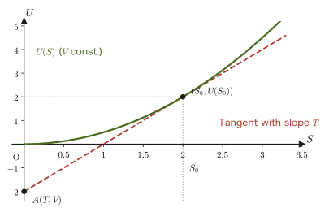
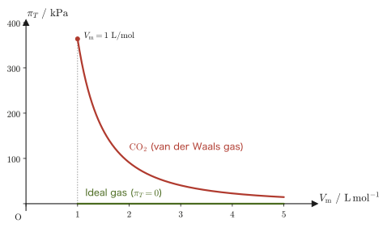

Chapter 31Thermodynamic Relations and the Maxwell Relations
When a gas confined in a container is heated, how much its pressure rises can be measured with a pressure gauge and a thermometer. By contrast, how much the entropy changes when the volume is changed cannot be measured directly with any apparatus whatsoever. Even so, these two quantities are equal—and this is the central equation of this chapter (a Maxwell relation).
In the preceding chapters, four state quantities have appeared: the internal energy $U$, the enthalpy $H=U+pV$, the Helmholtz free energy $A=U-TS$, and the Gibbs energy (Gibbs free energy) $G=H-TS=U+pV-TS$. Each was introduced from the viewpoint of “what has to be held constant in order for the direction of spontaneous change to be determined” (Chapter 30), but in this chapter we take a fresh look at these four from a completely different angle. That is, if we regard $U,H,A,G$ as “functions of a specified pair of variables” and take the total differential (the change produced when two variables are moved simultaneously by a small amount, expressed in a single equation), then a surprising fact comes into view: the eight partial derivatives that appear as its coefficients (for example $\left(\pdiff{U}{S}\right)_V$, obtained by holding the other variables fixed and differentiating with respect to only one variable) are all equal to one of the temperature $T$, the pressure $p$, the volume $V$, or the entropy $S$ (apart from sign).
Furthermore, among these eight partial derivatives, four equalities—the Maxwell relations—hold, because $U,H,A,G$ are “smooth functions for which the order of second-order partial differentiation may be interchanged.” These relations make it possible to rewrite quantities that are hard to measure directly (for example, the change of the entropy when the volume is changed, $(\pdiff{S}{V})_T$) in terms of quantities that are easy to measure in the laboratory (for example, the change of the pressure when the temperature is changed, $(\pdiff{p}{T})_V$), and they are among the most practical tools in thermodynamics. In high school physics, pressure, volume, temperature, and quantity of heat were each linked by separate formulas (the Boyle–Charles law, the equation for specific heat), but here we begin to see behind them a unified structure: “differential relations between the entropy and the free energies.”
For each of the four state quantities, we repeat exactly the same four-step procedure four times: (i) find the total differential from the definition, (ii) write the total differential in terms of the independent variables, (iii) compare (i) and (ii) to read off the partial derivatives, and (iv) derive the Maxwell relation from the interchange of the order of second derivatives (Schwarz's theorem). If you go through this procedure slowly for the first one, $U$, then for $H,A,G$ it is “just doing the same thing once more,” so there is no need to brace yourself.
- Find the total differentials of the internal energy $U$, the enthalpy $H$, the Helmholtz free energy $A$, and the Gibbs energy $G$, and read off the partial derivatives with respect to the natural independent variables of each
- From the interchange of the order of second partial derivatives (Schwarz's theorem, University Mathematics, Section 6.3), which is the same as the condition for an exact differential, derive the four Maxwell relations (I)–(IV), and use them for rewriting into measurable quantities, in cases such as the temperature change in an adiabatic process and the heat released in isothermal compression
- Understand that the defining equations of $U,H,A,G$ are Legendre transformations that “replace a variable by its conjugate variable,” and sort out the “natural variables” of each potential (Advanced)
- Derive the thermodynamic equation of state $(\pdiff{U}{V})_T=T(\pdiff{p}{T})_V-p$ from Maxwell relation (III), and compute concretely the internal pressure and the entropy of an ideal gas and a van der Waals gas
- Rederive the general Mayer relation, $C_p-C_V=\alpha^2TV/\kappa_T$, which was also derived in Chapter 27, from the standpoint of Maxwell relations (III) and (IV), and check it against numerical values for solids and liquids
- Understand the conditions for thermodynamic stability, $C_V\gt0$ and $\kappa_T\gt0$, as consequences of the second law (the law of entropy increase)
Source notes: Yasuhide Mochizuki, Physics Notes: Thermodynamics, pp. 55–58.
31.1 The Total Differential of the Internal Energy $U$ and Maxwell Relation (I)
Consider a quasi-static (reversible) change. Following this book's sign convention (the convention at the beginning of Chapter 23) and using the work $\dd'W=-p\,\dd V$ that is done on the system by its surroundings, the differential form of the first law of thermodynamics is
\begin{equation} \dd'Q=\dd U+p\,\dd V \label{eq:31-firstlaw} \end{equation}as shown in Section 26.6. On the other hand, from the definition of entropy (Section 29.1), in a quasi-static change we have
\begin{equation} \dd'Q=T\,\dd S \label{eq:31-entropy-def} \end{equation}Eq. \eqref{eq:31-firstlaw} and Eq. \eqref{eq:31-entropy-def} both express the same $\dd'Q$ (the heat absorbed by the system at this instant), so we may equate their right-hand sides:
$$ \dd U+p\,\dd V=T\,\dd S $$Solving this for $\dd U$, we obtain
\begin{equation} \dd U=T\,\dd S-p\,\dd V \label{eq:31-dU} \end{equation}This is the relation that serves as the starting point for all the discussion in this chapter.
Caution: This equation also holds for changes that are not quasi-static
In deriving Eq. \eqref{eq:31-dU} we assumed a quasi-static (reversible) change. This is because, in a change that is not quasi-static, it is sometimes impossible to assign a single temperature $T$ to the system as a whole, and $\dd'Q=T\,\dd S$ (Eq. \eqref{eq:31-entropy-def}) itself does not hold. However, both sides of Eq. \eqref{eq:31-dU} are written purely in terms of infinitesimal changes of the state quantities $U,S,V$ (quantities that are determined only by the present state of the system and do not depend on the path by which it arrived there). Therefore Eq. \eqref{eq:31-dU} (and likewise all the equations for $\dd H,\dd A,\dd G$ that we derive below) is a relation among the changes of state quantities between two neighboring equilibrium states, and it holds whether the actual process connecting the two states is reversible or irreversible. There is no need to assign a temperature $T$ to the intermediate nonequilibrium states.
For example, when an ideal gas expands freely into a vacuum (Section 29.8), it exchanges neither heat nor work, so $\dd U=0$, but between the initial and final states the entropy increases by $\dd S=nR\,\dd V/V\gt0$. In this case $0=T\,\dd S-p\,\dd V$ ($T\,\dd S=nRT\,\dd V/V=p\,\dd V$), so Eq. \eqref{eq:31-dU} indeed holds. Note that here $T\,\dd S$ is not the heat actually received, $\dd'Q\,(=0)$, but the value of the change of a state quantity.
Eq. \eqref{eq:31-dU} shows that $\dd U$ can be written as a linear combination of the two infinitesimal quantities $\dd S$ and $\dd V$. So let us regard $U$ as a function of the two variables $S$ and $V$, $U=U(S,V)$ (that $U$ is actually determined as such a function is guaranteed by the fact that $U,S,V$ are all state quantities—among state quantities, if we choose as many independent variables as the system has degrees of freedom, the rest can be expressed as functions of them). The general formula for the total differential of a function of two variables (University Mathematics, Section 6.2) is
\begin{equation} \dd U=\left(\pdiff{U}{S}\right)_V\dd S+\left(\pdiff{U}{V}\right)_S\dd V \label{eq:31-dU-general} \end{equation}Here the subscript $V$ (or $S$) is a notation peculiar to thermodynamics meaning “take the partial derivative while holding that variable constant,” as we have already used in Section 27.2.
Derivation: Reading off the partial derivatives by comparing coefficients
Eq. \eqref{eq:31-dU} and Eq. \eqref{eq:31-dU-general} both express the same total differential $\dd U$ of $U$ as a linear combination of $\dd S$ and $\dd V$. Since $\dd S,\dd V$ are infinitesimal quantities that can be varied independently of each other (we chose $S,V$ as the independent variables), for the two expressions to be equal for arbitrary $\dd S,\dd V$, the coefficients of $\dd S$ must be equal and the coefficients of $\dd V$ must be equal (exactly the same logic as comparing the coefficients of polynomials or the components of vectors). Hence,
$$ \left(\pdiff{U}{S}\right)_V=T,\qquad\qquad \left(\pdiff{U}{V}\right)_S=-p $$is obtained.
∎
Theorem 31.1: Partial-derivative expressions for the internal energy
\begin{equation} \left(\pdiff{U}{S}\right)_V=T,\qquad\qquad \left(\pdiff{U}{V}\right)_S=-p \label{eq:31-U-partials} \end{equation}Intuition: The meaning of the two partial derivatives
Let us think about the meaning of $\left(\pdiff{U}{S}\right)_V=T$. In a quasi-static change at constant volume $V$, the second term $-p\,\dd V$ on the right-hand side of Eq. \eqref{eq:31-dU} becomes $0$, so $\dd U=T\,\dd S$. That is, in an isochoric process, the change in internal energy equals “temperature $\times$ change in entropy”—we can read this as saying that the increase in internal energy needed to raise the entropy by one unit $[\mathrm{J/K}]$ is precisely the temperature $T$.
The meaning of $\left(\pdiff{U}{V}\right)_S=-p$ can be understood in the same way. In a quasi-static change at constant entropy $S$, that is, in a quasi-static adiabatic process (by Eq. \eqref{eq:31-entropy-def}, $\dd'Q=T\,\dd S$: if a process is adiabatic, so that $\dd'Q=0$, then necessarily $\dd S=0$ in a quasi-static change), the first term $T\,\dd S$ on the right-hand side of Eq. \eqref{eq:31-dU} becomes $0$, so $\dd U=-p\,\dd V$. When the gas expands ($\dd V\gt0$), $\dd U\lt0$, which expresses the fact that in a quasi-static (reversible) adiabatic process, the internal energy decreases by the amount of work the gas does on its surroundings (recalling that the work done by the gas on its surroundings is $\dd'W'=-\dd'W=p\,\dd V$, we have $\dd U=-\dd'W'$, which is precisely energy conservation itself: “the internal energy decreases by the amount of work done”).
The two equations in Eq. \eqref{eq:31-U-partials} look at first like separate experimental facts, but in fact they are not independent of each other. If $U(S,V)$ is a smooth function (one that can be partially differentiated any number of times), the second-order partial derivatives do not depend on the order of differentiation—this is Schwarz's theorem (also called Clairaut's theorem; University Mathematics, Section 6.3, Theorem 6.1). Applying this fact to the two equations in Eq. \eqref{eq:31-U-partials}, a new relation arises between the two seemingly unrelated quantities $T$ and $p$.
Derivation: Maxwell relation (I)
Differentiate the first equation of Eq. \eqref{eq:31-U-partials}, $T=\left(\pdiff{U}{S}\right)_V$, this time with respect to $V$ (holding $S$ constant):
$$ \left(\pdiff{T}{V}\right)_S=\pdiff{}{V}\left(\pdiff{U}{S}\right)_V=\frac{\partial^2U}{\partial V\,\partial S} $$Similarly, differentiate the second equation of Eq. \eqref{eq:31-U-partials}, $-p=\left(\pdiff{U}{V}\right)_S$, this time with respect to $S$ (holding $V$ constant):
$$ \left(\pdiff{p}{S}\right)_V=-\pdiff{}{S}\left(\pdiff{U}{V}\right)_S=-\frac{\partial^2U}{\partial S\,\partial V} $$Now, using Schwarz's theorem $\dfrac{\partial^2U}{\partial V\,\partial S}=\dfrac{\partial^2U}{\partial S\,\partial V}$ (which holds because $U$ is a smooth function), the right-hand sides of the two equations above are the same quantity up to a sign. That is,
$$ \left(\pdiff{T}{V}\right)_S=\frac{\partial^2U}{\partial V\,\partial S}=\frac{\partial^2U}{\partial S\,\partial V}=-\left(\pdiff{p}{S}\right)_V $$and hence
$$ \left(\pdiff{T}{V}\right)_S=-\left(\pdiff{p}{S}\right)_V $$is obtained.
∎
Formula 31.1: Maxwell relation (I)
\begin{equation} \left(\pdiff{T}{V}\right)_S=-\left(\pdiff{p}{S}\right)_V \label{eq:31-maxwell-1} \end{equation}Why is this convenient? Temperature change in an adiabatic process
The left-hand side of Eq. \eqref{eq:31-maxwell-1}, $\left(\pdiff{T}{V}\right)_S$, is “the temperature change when the volume is varied while the entropy is held constant (in a quasi-static adiabatic process),” which is difficult to investigate directly by experiment. However, if we rewrite the right-hand side, it can be expressed purely in terms of quantities that are easy to measure. First, at constant volume Eq. \eqref{eq:31-dU} becomes $\dd U=T\,\dd S$, so the heat capacity at constant volume is $C_V=\left(\pdiff{U}{T}\right)_V=T\left(\pdiff{S}{T}\right)_V$, that is, $\left(\pdiff{T}{S}\right)_V=T/C_V$. Therefore $\left(\pdiff{p}{S}\right)_V=\left(\pdiff{p}{T}\right)_V\left(\pdiff{T}{S}\right)_V=\dfrac{T}{C_V}\left(\pdiff{p}{T}\right)_V$, and Eq. \eqref{eq:31-maxwell-1} can be rewritten as
$$ \left(\pdiff{T}{V}\right)_S=-\frac{T}{C_V}\left(\pdiff{p}{T}\right)_V $$The right-hand side is determined solely by how fast the pressure increases when the temperature is raised at constant volume (which can be measured with a pressure gauge and a thermometer) and by the heat capacity. From this equation we can read off that, for a substance whose pressure increases with temperature ($\left(\pdiff{p}{T}\right)_V\gt0$), the temperature falls in an adiabatic expansion ($\dd V\gt0$). For an ideal gas, $\left(\pdiff{p}{T}\right)_V=nR/V$, so $\left(\pdiff{T}{V}\right)_S=-nRT/(C_VV)$, which agrees with Poisson's formula $TV^{\gamma-1}=\text{const.}$ of Chapter 27 (Example 31.3).
Example 31.1: Change in internal energy in isochoric and adiabatic processes
(a) $1\ \mathrm{mol}$ of a monatomic ideal gas ($C_V=\tfrac32R=12.5\ \mathrm{J/(K\,mol)}$) is heated quasi-statically while its volume is kept constant, and its entropy increases by $\Delta S=+0.050\ \mathrm{J/K}$ (the temperature is near $T=300\ \mathrm K$). (b) In a separate experiment, the same gas is expanded quasi-statically and adiabatically, its volume increasing by $\Delta V=+1.0\times10^{-4}\ \mathrm{m^3}$ (the pressure may be regarded as constant at $p=2.0\times10^{5}\ \mathrm{Pa}$). Find the change in internal energy $\Delta U$ in each case.
Solution. (a) Since the process is isochoric, the second term of Eq. \eqref{eq:31-dU} is $0$. Applying $\left(\pdiff{U}{S}\right)_V=T$ of Theorem 31.1 approximately to a finite change, we obtain
$$ \Delta U\approx T\,\Delta S=300\ \mathrm{K}\times0.050\ \mathrm{J/K}=15\ \mathrm{J} $$(Unit check: $\mathrm{K}\times\mathrm{J/K}=\mathrm{J}$, which agrees with the unit of the left-hand side.) This approximation presupposes that $T$ stays nearly constant during the change. To check this: at constant volume $\dd U=C_V\,\dd T=T\,\dd S$, so $\Delta T\approx T\,\Delta S/C_V=15\ \mathrm J/12.5\ \mathrm{J/K}\approx1.2\ \mathrm K$, a change of only $0.4\ \%$ compared with $300\ \mathrm K$. The approximation is therefore justified. (Strictly, from $\Delta S=C_V\ln(T_2/T_1)$ we obtain $T_2=301.2\ \mathrm K$ and $\Delta U=C_V(T_2-T_1)=15.03\ \mathrm J$, and the difference from the approximate value is at most $0.2\ \%$.)
(b) Since the process is quasi-static and adiabatic, $\Delta S=0$ and the first term of Eq. \eqref{eq:31-dU} is $0$; using $\left(\pdiff{U}{V}\right)_S=-p$ of Theorem 31.1, we obtain
$$ \Delta U\approx-p\,\Delta V=-2.0\times10^{5}\ \mathrm{Pa}\times1.0\times10^{-4}\ \mathrm{m^3}=-20\ \mathrm{J} $$(Unit check: $\mathrm{Pa}\times\mathrm{m^3}=\mathrm{N/m^2}\times\mathrm{m^3}=\mathrm{N\cdot m}=\mathrm{J}$, which is consistent. The volume of this gas is $V=RT/p\approx1.2\times10^{-2}\ \mathrm{m^3}$ (for $T=300\ \mathrm K$), and $\Delta V$ is only $0.8\ \%$ of it, so the pressure may be regarded as constant.) Because the gas expanded, its internal energy decreased by the amount of work it did on the surroundings—case (a) is one in which the gas absorbs heat and its internal energy increases, and case (b) is one in which the gas gives up work and its internal energy decreases, so the difference in meaning between the two terms of Eq. \eqref{eq:31-dU} shows up clearly in the numbers.
31.2 The Total Differential of the Enthalpy $H$ and Maxwell Relation (II)
We now repeat exactly the same four-step procedure as in Section 31.1, this time for the enthalpy $H$. Enthalpy was defined in Section 27.2 as $H\equiv U+pV$. Differentiating this definition (using the product rule $\dd(pV)=p\,\dd V+V\,\dd p$), we obtain
$$ \dd H=\dd U+\dd(pV)=\underline{\underline{\dd U}}+p\,\dd V+V\,\dd p $$Here we substitute Eq. \eqref{eq:31-dU} ($\dd U=T\,\dd S-p\,\dd V$), obtained in Section 31.1, just as it stands for the part $\dd U$ marked with a double underline:
$$ \dd H=\underline{\underline{T\,\dd S-p\,\dd V}}+p\,\dd V+V\,\dd p $$Since $-p\,\dd V$ and $+p\,\dd V$ on the right-hand side exactly cancel, we obtain
\begin{equation} \dd H=T\,\dd S+V\,\dd p \label{eq:31-dH} \end{equation}Note that, whereas the independent variables for $U(S,V)$ were $(S,V)$, for $H$ the pressure $p$ appears in place of the volume $V$—enthalpy is something like an internal energy with “$V$ replaced by $p$” (the true nature of this “replacement” will become clear in Section 31.5).
If we regard $H$ as a function of the variables $S,p$, namely $H=H(S,p)$, the general formula for the total differential is
\begin{equation} \dd H=\left(\pdiff{H}{S}\right)_p\dd S+\left(\pdiff{H}{p}\right)_S\dd p \label{eq:31-dH-general} \end{equation}Applying exactly the same logic as in Section 31.1 (since $\dd S,\dd p$ are infinitesimal quantities that can be varied independently, the coefficients can be compared) to Eqs. \eqref{eq:31-dH} and \eqref{eq:31-dH-general}, we obtain the following theorem.
Theorem 31.2: Partial-derivative expressions for the enthalpy
\begin{equation} \left(\pdiff{H}{S}\right)_p=T,\qquad\qquad \left(\pdiff{H}{p}\right)_S=V \label{eq:31-H-partials} \end{equation}Intuition: The meaning of the two partial derivatives
The meaning of $\left(\pdiff{H}{S}\right)_p=T$ is that in a quasi-static change at constant pressure $p$ (the second term $V\,\dd p$ of Eq. \eqref{eq:31-dH} becomes $0$), $\dd H=T\,\dd S$; that is, in an isobaric process, the change in enthalpy equals the temperature times the change in entropy. Indeed, at constant pressure $\dd'Q=\dd H$ (the relation seen in Section 27.2), and for a quasi-static process $\dd'Q=T\,\dd S$, so it is only natural that $\dd H=T\,\dd S$—we have thus confirmed that two routes (the route via Eq. \eqref{eq:31-dH}, and the route that uses $\dd'Q=\dd H=T\,\dd S$ directly) reach the same conclusion.
The meaning of $\left(\pdiff{H}{p}\right)_S=V$ is that at constant entropy, that is, in a quasi-static adiabatic process, $\dd H=V\,\dd p$. This corresponds to the work exchanged with the surroundings (what engineering calls the technical work $\int V\,\dd p$) when a gas is compressed or expanded adiabatically in a device through which gas flows in and out, such as a compressor or a turbine. When a gas is compressed adiabatically ($\dd p\gt0$), work is done on it by the surroundings and $H$ increases ($\dd H\gt0$). This is a different quantity from the volume work $p\,\dd V$ done when a gas confined in a piston expands or contracts (corresponding to $\dd U=-p\,\dd V$); for example, in an adiabatic process of an ideal gas, $\Delta H=\gamma\,\Delta U$, that is, it is $\gamma$ times $\Delta U$ (Example 31.2).
Note also that the Joule–Thomson effect studied in Section 27.6 is a change at constant enthalpy (isenthalpic), occurring in an adiabatic steady flow through a porous plug, and that the pressure falls in it. By contrast, $\left(\pdiff{H}{p}\right)_S$ here is the change in enthalpy when the pressure is changed at constant entropy (quasi-static adiabatic), so take care not to confuse the two.
Derivation: Maxwell relation (II)
Differentiating the first equation of Eq. \eqref{eq:31-H-partials}, $T=\left(\pdiff{H}{S}\right)_p$, partially with respect to $p$ (holding $S$ constant) and the second equation, $V=\left(\pdiff{H}{p}\right)_S$, with respect to $S$ (holding $p$ constant), we obtain
$$ \left(\pdiff{T}{p}\right)_S=\frac{\partial^2H}{\partial p\,\partial S},\qquad\qquad \left(\pdiff{V}{S}\right)_p=\frac{\partial^2H}{\partial S\,\partial p} $$Since $H$ is a smooth function, Schwarz's theorem $\dfrac{\partial^2H}{\partial p\,\partial S}=\dfrac{\partial^2H}{\partial S\,\partial p}$ holds, so the right-hand sides are equal, and therefore the left-hand sides are equal as well:
$$ \left(\pdiff{T}{p}\right)_S=\left(\pdiff{V}{S}\right)_p $$∎
Formula 31.2: Maxwell relation (II)
\begin{equation} \left(\pdiff{T}{p}\right)_S=\left(\pdiff{V}{S}\right)_p \label{eq:31-maxwell-2} \end{equation}Why is this convenient? Temperature change in adiabatic compression
The left-hand side of Eq. \eqref{eq:31-maxwell-2}, $\left(\pdiff{T}{p}\right)_S$, is “the temperature change when the pressure is changed in a quasi-static adiabatic process.” Let us rewrite the right-hand side. At constant pressure $\dd H=T\,\dd S$, so the heat capacity at constant pressure is $C_p=\left(\pdiff{H}{T}\right)_p=T\left(\pdiff{S}{T}\right)_p$; that is, $\left(\pdiff{T}{S}\right)_p=T/C_p$. Also, by the definition of the coefficient of thermal expansion $\alpha$ (Section 27.4), $\left(\pdiff{V}{T}\right)_p=\alpha V$. Therefore $\left(\pdiff{V}{S}\right)_p=\left(\pdiff{V}{T}\right)_p\left(\pdiff{T}{S}\right)_p=\alpha V\cdot\dfrac{T}{C_p}$, and Eq. \eqref{eq:31-maxwell-2} can be rewritten as
$$ \left(\pdiff{T}{p}\right)_S=\frac{\alpha TV}{C_p} $$The quantities $\alpha,V,C_p$ on the right-hand side can all be measured experimentally. A substance with a coefficient of thermal expansion $\alpha\gt0$ (most solids, liquids, and gases) heats up when compressed adiabatically. Conversely, a substance with $\alpha\lt0$, such as water at or below $4\ ^\circ\mathrm{C}$, cools when compressed adiabatically. For an ideal gas, $\alpha=1/T$, so $\left(\pdiff{T}{p}\right)_S=V/C_p$, which agrees with the result obtained from Poisson's formula (Example 31.3). The numerical values for a solid (copper) are examined in Exercise 31.8.
Example 31.2: Change in enthalpy in adiabatic compression
$1\ \mathrm{mol}$ of a monatomic ideal gas ($C_V=\tfrac32R$, $C_p=\tfrac52R$, $\gamma=C_p/C_V=5/3$) is compressed quasi-statically and adiabatically from $T_1=300\ \mathrm K$, $p_1=1.0\times10^{5}\ \mathrm{Pa}$ until its pressure is $p_2=2.0\times10^{5}\ \mathrm{Pa}$. Find (a) the final temperature $T_2$, (b) the change in internal energy $\Delta U$, and (c) the change in enthalpy $\Delta H$. Also, (d) verify that $\Delta H=\int V\,\dd p$ and that $\Delta H=\gamma\,\Delta U$.
Solution. (a) In a quasi-static adiabatic process, $pV^{\gamma}=\text{const.}$ (Formula 27.1 in Section 27.3). Substituting $V=RT/p$ gives $p^{1-\gamma}T^{\gamma}=\text{const.}$, that is, $T\,p^{(1-\gamma)/\gamma}=\text{const.}$, so
$$ T_2=T_1\left(\frac{p_2}{p_1}\right)^{(\gamma-1)/\gamma}=300\ \mathrm K\times2^{2/5}=300\ \mathrm K\times1.3195=3.96\times10^{2}\ \mathrm K $$(where $(\gamma-1)/\gamma=(2/3)/(5/3)=2/5$). The temperature rise is $\Delta T=T_2-T_1=95.9\ \mathrm K$.
(b) In an adiabatic process $\dd'Q=0$, so $\Delta U$ equals the work done on the gas by the surroundings. $\Delta U=C_V\Delta T=12.47\ \mathrm{J/K}\times95.9\ \mathrm K=1.20\times10^{3}\ \mathrm J$.
(c) For an ideal gas, $H=U+pV=C_VT+nRT=C_pT$ (apart from a constant that depends on the choice of the origin of $U$), so $H$ too is a function of temperature alone, and therefore $\Delta H=C_p\Delta T$ in any process. Hence $\Delta H=20.79\ \mathrm{J/K}\times95.9\ \mathrm K=1.99\times10^{3}\ \mathrm J$.
(d) From the adiabatic relation $pV^\gamma=K$ ($K$ is a constant), $V=(K/p)^{1/\gamma}$, so
$$ \int_{p_1}^{p_2}V\,\dd p=K^{1/\gamma}\int_{p_1}^{p_2}p^{-1/\gamma}\,\dd p=K^{1/\gamma}\,\frac{\gamma}{\gamma-1}\Bigl[p^{(\gamma-1)/\gamma}\Bigr]_{p_1}^{p_2}=\frac{\gamma}{\gamma-1}\,(p_2V_2-p_1V_1) $$(we used $K^{1/\gamma}p^{(\gamma-1)/\gamma}=pV$). Since $p_2V_2-p_1V_1=nR(T_2-T_1)$ and $\dfrac{\gamma}{\gamma-1}nR=C_p$ (from $C_V=nR/(\gamma-1)$), we have $\int V\,\dd p=C_p\Delta T=1.99\times10^{3}\ \mathrm J=\Delta H$, so the two indeed agree. Also, $\Delta H/\Delta U=C_p/C_V=\gamma=5/3$. The difference is $\Delta H-\Delta U=\Delta(pV)=nR\Delta T=0.80\times10^{3}\ \mathrm J$, which corresponds to the work $pV$ of pushing the gas in as it flows. For the same compression, the work done by the surroundings when the gas is confined in a piston and compressed is $\Delta U=1.20\ \mathrm{kJ}$, which is $1/\gamma$ times the work $\Delta H=1.99\ \mathrm{kJ}$ done when the gas is compressed in a flow, as in a compressor.
Example 31.3: Verifying Maxwell relations (I) and (II) for an ideal gas
For an ideal gas ($n\ \mathrm{mol}$) whose heat capacities at constant volume and at constant pressure, $C_V,\ C_p=C_V+nR$, are independent of temperature, compute both sides of Formula 31.1 and Formula 31.2 separately, and verify that they agree.
Solution. By Formula 29.1 in Section 29.2, $S(T,V)=C_V\ln T+nR\ln V+\alpha_0$. Substituting $V=nRT/p$ into this gives $S(T,p)=(C_V+nR)\ln T-nR\ln p+\alpha_0'=C_p\ln T-nR\ln p+\alpha_0'$. Hence $\left(\pdiff{S}{T}\right)_V=C_V/T$ and $\left(\pdiff{S}{T}\right)_p=C_p/T$; that is, $\left(\pdiff{T}{S}\right)_V=T/C_V$ and $\left(\pdiff{T}{S}\right)_p=T/C_p$. Also, from the relations for an adiabatic process (Formula 27.1), at constant $S$ we have $TV^{\gamma-1}=\text{const.}$ and $T\,p^{(1-\gamma)/\gamma}=\text{const.}$ Furthermore, we use $\gamma-1=nR/C_V$ and $(\gamma-1)/\gamma=nR/C_p$.
(I) Left-hand side: from $T=(\text{const.})\,V^{-(\gamma-1)}$, $\left(\pdiff{T}{V}\right)_S=-(\gamma-1)\dfrac{T}{V}=-\dfrac{nRT}{C_VV}$. Right-hand side: since $p=nRT/V$, $\left(\pdiff{p}{S}\right)_V=\dfrac{nR}{V}\left(\pdiff{T}{S}\right)_V=\dfrac{nRT}{C_VV}$, and hence $-\left(\pdiff{p}{S}\right)_V=-\dfrac{nRT}{C_VV}$. The two sides agree.
(II) Left-hand side: from $T=(\text{const.})\,p^{(\gamma-1)/\gamma}$, $\left(\pdiff{T}{p}\right)_S=\dfrac{\gamma-1}{\gamma}\dfrac{T}{p}=\dfrac{nRT}{C_pp}$. Right-hand side: since $V=nRT/p$, $\left(\pdiff{V}{S}\right)_p=\dfrac{nR}{p}\left(\pdiff{T}{S}\right)_p=\dfrac{nRT}{C_pp}$. The two sides agree.
(The calculation of the left-hand sides used only Poisson's formula derived from the first law, and the calculation of the right-hand sides used only the entropy of an ideal gas, so two mutually independent calculations have been found to agree. Note also that the value in (I) agrees with the expression $-\dfrac{T}{C_V}\left(\pdiff{p}{T}\right)_V=-\dfrac{nRT}{C_VV}$ in the “Why is this convenient?” box of Section 31.1, and the value in (II) agrees with $\dfrac{\alpha TV}{C_p}=\dfrac{V}{C_p}=\dfrac{nRT}{C_pp}$.)
31.3 The Total Differential of the Helmholtz Free Energy $A$ and Maxwell Relation (III)
We repeat the same procedure for the Helmholtz free energy $A\equiv U-TS$ (Section 30.4, Definition 30.1). Differentiating the defining equation (using the product rule $\dd(TS)=T\,\dd S+S\,\dd T$), we obtain
$$ \dd A=\dd U-\dd(TS)=\underline{\underline{\dd U}}-T\,\dd S-S\,\dd T $$Substituting Eq. \eqref{eq:31-dU} ($\dd U=T\,\dd S-p\,\dd V$) into the double-underlined $\dd U$ gives
$$ \dd A=\underline{\underline{T\,\dd S-p\,\dd V}}-T\,\dd S-S\,\dd T $$Since $T\,\dd S$ and $-T\,\dd S$ on the right-hand side cancel, we obtain
\begin{equation} \dd A=-p\,\dd V-S\,\dd T \label{eq:31-dA} \end{equation}This time the independent variables have changed from $(S,V)$ or $(S,p)$ to $(V,T)$—the entropy $S$ has disappeared and the temperature $T$ has appeared in its place. In the laboratory, it is much easier to hold the temperature constant with a thermometer and a constant-temperature bath than to control the entropy directly, so this Helmholtz energy is a combination of variables that is very convenient in practice.
Regarding $A$ as a function $A=A(V,T)$ of the variables $V,T$, the general formula for the total differential is
\begin{equation} \dd A=\left(\pdiff{A}{V}\right)_T\dd V+\left(\pdiff{A}{T}\right)_V\dd T \label{eq:31-dA-general} \end{equation}Comparing the coefficients of Eq. \eqref{eq:31-dA} and Eq. \eqref{eq:31-dA-general}, we obtain the following theorem.
Theorem 31.3: Partial-derivative expressions for the Helmholtz free energy
\begin{equation} \left(\pdiff{A}{V}\right)_T=-p,\qquad\qquad \left(\pdiff{A}{T}\right)_V=-S \label{eq:31-A-partials} \end{equation}Intuition: The meaning of the two partial derivatives
The meaning of $\left(\pdiff{A}{V}\right)_T=-p$ is that in a quasi-static change at constant temperature $T$ (the second term $-S\,\dd T$ of Eq. \eqref{eq:31-dA} becomes $0$), $\dd A=-p\,\dd V$. As we saw in Section 30.4, at constant volume and constant temperature $A$ decreases in a spontaneous change, and as we saw in Section 30.5, the maximum work that the system can do on its surroundings in a reversible isothermal process was equal to the decrease $-\Delta A$ in $A$. $\left(\pdiff{A}{V}\right)_T=-p$ expresses this relation in the form of a partial derivative, and it can be read as follows: “under isothermal conditions, when the volume is increased by $\dd V$, the quantity $A$, which is the source of the maximum extractable work, decreases by the amount $p\,\dd V$ of work done by the system on its surroundings.”
The meaning of $\left(\pdiff{A}{T}\right)_V=-S$ is that in a change at constant volume $V$, $\dd A=-S\,\dd T$. Since the entropy satisfies $S\ge0$ (the third law of thermodynamics, Chapter 32), this equation says that “at constant volume, $A$ decreases as the temperature is raised.” This is because the term $-TS$ on the right-hand side of $A=U-TS$ becomes a larger negative value as $T$ rises. For example, for a monatomic ideal gas, $U=\tfrac32nRT$ and $S=\tfrac32nR\ln T+nR\ln V+\text{const.}$, so differentiating $A=U-TS$ with respect to $T$ gives $\tfrac32nR-\bigl(S+\tfrac32nR\bigr)=-S$, and indeed $\left(\pdiff{A}{T}\right)_V=-S$ holds.
Derivation: Maxwell relation (III)
Differentiating the first equation of Eq. \eqref{eq:31-A-partials}, $-p=\left(\pdiff{A}{V}\right)_T$, with respect to $T$ (holding $V$ constant), and the second equation, $-S=\left(\pdiff{A}{T}\right)_V$, with respect to $V$ (holding $T$ constant), we obtain
$$ -\left(\pdiff{p}{T}\right)_V=\frac{\partial^2A}{\partial T\,\partial V},\qquad\qquad -\left(\pdiff{S}{V}\right)_T=\frac{\partial^2A}{\partial V\,\partial T} $$Since $A$ is a smooth function, Schwarz's theorem $\dfrac{\partial^2A}{\partial T\,\partial V}=\dfrac{\partial^2A}{\partial V\,\partial T}$ holds, so the right-hand sides are equal, and therefore the left-hand sides are equal as well:
$$ -\left(\pdiff{p}{T}\right)_V=-\left(\pdiff{S}{V}\right)_T $$Multiplying both sides by $-1$, we obtain
$$ \left(\pdiff{p}{T}\right)_V=\left(\pdiff{S}{V}\right)_T $$∎
Formula 31.3: Maxwell relation (III)
\begin{equation} \left(\pdiff{p}{T}\right)_V=\left(\pdiff{S}{V}\right)_T \label{eq:31-maxwell-3} \end{equation}Why is this especially convenient?
The left-hand side of Formula 31.3, $\left(\pdiff{p}{T}\right)_V$, is the change in pressure when the temperature is varied in a container of fixed volume, and it is a directly measurable quantity using only a pressure gauge and a thermometer. Therefore the right-hand side, $\left(\pdiff{S}{V}\right)_T$—the change in entropy accompanying a change in volume—which is by nature hard to measure, can be obtained from measurable quantities. In Sections 31.6 and 31.7, this equation is used directly in calculating the internal pressure of an ideal gas and of a van der Waals gas; it is the most practically useful Maxwell relation in this chapter.
Example 31.4: Verifying Maxwell relation (III) for an ideal gas
Using the ideal gas law $pV=nRT$ (Section 23.6), compute both sides of Formula 31.3, $\left(\pdiff{p}{T}\right)_V$ and $\left(\pdiff{S}{V}\right)_T$, separately, and confirm that the two agree.
Solution. Solving the equation of state for $p$ gives $p=nRT/V$. Differentiating this with respect to $T$ (holding $V,n$ constant) gives
$$ \left(\pdiff{p}{T}\right)_V=\frac{nR}{V} $$On the other hand, computing the right-hand side $\left(\pdiff{S}{V}\right)_T$ requires the functional form of the entropy of an ideal gas. In Section 29.2, we built $\dd S=C_V\,\dd T/T+(p/T)\,\dd V$ from the first law $\dd U=C_V\,\dd T$ (ideal gas) and the definition of entropy $\dd S=\dd'Q/T$, integrated it using $p/T=nR/V$, and obtained Formula 29.1, $S(T,V)=C_V\ln T+nR\ln V+\alpha_0$. The Maxwell relations were not used in this derivation. Differentiating this entropy with respect to $V$ (holding $T$ constant) gives
$$ \left(\pdiff{S}{V}\right)_T=\frac{nR}{V} $$and indeed the two agree: $\left(\pdiff{p}{T}\right)_V=\left(\pdiff{S}{V}\right)_T=nR/V$. The practical benefit of Formula 31.3 is that, instead of deriving the functional form of the entropy of the ideal gas every time, as we did for the right-hand side, we can obtain the same result from the equation of state alone (the left-hand side).
31.4 The Total Differential of the Gibbs Energy $G$, Maxwell Relation (IV), and a Summary — The Thermodynamic Square
Finally, we repeat the same procedure for the Gibbs energy $G\equiv U+pV-TS=H-TS$ (Section 30.4, Definition 30.2). Using the form $G=H-TS$ and differentiating the defining equation, we obtain
$$ \dd G=\dd H-\dd(TS)=\underline{\underline{\dd H}}-T\,\dd S-S\,\dd T $$Substituting Eq. \eqref{eq:31-dH} ($\dd H=T\,\dd S+V\,\dd p$) into the double-underlined $\dd H$ gives
$$ \dd G=\underline{\underline{T\,\dd S+V\,\dd p}}-T\,\dd S-S\,\dd T $$Since $T\,\dd S$ and $-T\,\dd S$ on the right-hand side cancel, we obtain
\begin{equation} \dd G=V\,\dd p-S\,\dd T \label{eq:31-dG} \end{equation}The independent variables are $(p,T)$—pressure and temperature—which is the pair of variables easiest to control in the laboratory (think of a chemistry experiment carried out at room temperature and atmospheric pressure). This is the reason the Gibbs energy is used most frequently in chemistry and materials science.
Regarding $G$ as a function $G=G(p,T)$ of the variables $p,T$, the general formula for the total differential is
\begin{equation} \dd G=\left(\pdiff{G}{p}\right)_T\dd p+\left(\pdiff{G}{T}\right)_p\dd T \label{eq:31-dG-general} \end{equation}Comparing the coefficients of Eq. \eqref{eq:31-dG} and Eq. \eqref{eq:31-dG-general}, we obtain the following theorem.
Theorem 31.4: Partial-derivative expressions for the Gibbs energy
\begin{equation} \left(\pdiff{G}{p}\right)_T=V,\qquad\qquad \left(\pdiff{G}{T}\right)_p=-S \label{eq:31-G-partials} \end{equation}Intuition: The meaning of the two partial derivatives
The meaning of $\left(\pdiff{G}{p}\right)_T=V$ is that, at constant temperature, when the pressure is raised by $\dd p$, the Gibbs energy increases in proportion to the volume $V$. Since the volume is always positive, at constant temperature, raising the pressure always increases the Gibbs energy—the larger the volume of a substance (a gas, for example), the more sensitive the response of its Gibbs energy to a change in pressure (when we treat phase transitions from Chapter 32 onward, this relation will be the key that determines which of solid, liquid, and gas is stable).
As for $\left(\pdiff{G}{T}\right)_p=-S$, it is exactly the same relation as the result obtained in Section 30.6 (the derivation of the Gibbs–Helmholtz equation using $(\pdiff{G}{T})_p=-S$), and, as in the case of $A$ in Section 31.3, it expresses that at constant pressure, raising the temperature always decreases the Gibbs energy (because $S\ge0$).
Derivation: Maxwell relation (IV)
Differentiating the first equation of Eq. \eqref{eq:31-G-partials}, $V=\left(\pdiff{G}{p}\right)_T$, with respect to $T$ (holding $p$ constant), and the second equation, $-S=\left(\pdiff{G}{T}\right)_p$, with respect to $p$ (holding $T$ constant), we obtain
$$ \left(\pdiff{V}{T}\right)_p=\frac{\partial^2G}{\partial T\,\partial p},\qquad\qquad -\left(\pdiff{S}{p}\right)_T=\frac{\partial^2G}{\partial p\,\partial T} $$Since $G$ is a smooth function, Schwarz's theorem $\dfrac{\partial^2G}{\partial T\,\partial p}=\dfrac{\partial^2G}{\partial p\,\partial T}$ holds, so the right-hand sides are equal, and therefore the left-hand sides are equal as well:
$$ \left(\pdiff{V}{T}\right)_p=-\left(\pdiff{S}{p}\right)_T $$∎
Formula 31.4: Maxwell relation (IV)
\begin{equation} \left(\pdiff{V}{T}\right)_p=-\left(\pdiff{S}{p}\right)_T \label{eq:31-maxwell-4} \end{equation}Why is this convenient? Heat released in isothermal compression
The left-hand side of Formula 31.4, $\left(\pdiff{V}{T}\right)_p$, equals $\alpha V$ if we use the coefficient of volume expansion $\alpha=\dfrac{1}{V}\left(\pdiff{V}{T}\right)_p$ introduced in Section 27.4 (a rewriting, in terms of partial derivatives, of the high school physics notions of the coefficients of linear and volume expansion), and it is easy to measure in the laboratory. Formula 31.4 can therefore be rewritten as
$$ \left(\pdiff{S}{p}\right)_T=-\alpha V $$and the change in entropy accompanying a change in pressure—a quantity that cannot itself be measured directly—can be found from a measurement of the coefficient of volume expansion alone. For a substance with $\alpha\gt0$, compressing it isothermally ($\dd p\gt0$) decreases its entropy. Since $\dd'Q=T\,\dd S$ in a quasi-static isothermal process, during isothermal compression the heat absorbed by the substance is $\dd'Q=-T\alpha V\,\dd p\lt0$; that is, it releases heat to the surroundings. To keep the temperature constant, this heat has to be allowed to escape (a numerical example is Example 31.6).
Example 31.5: Verifying Maxwell relation (IV) for an ideal gas
For an ideal gas, compute both sides of Formula 31.4, $\left(\pdiff{V}{T}\right)_p$ and $-\left(\pdiff{S}{p}\right)_T$, separately, and verify that they agree.
Solution. Left-hand side: differentiating $V=nRT/p$ with respect to $T$ (holding $p$ constant) gives $\left(\pdiff{V}{T}\right)_p=nR/p$. Right-hand side: as found in Example 31.3, $S(T,p)=C_p\ln T-nR\ln p+\alpha_0'$, so $\left(\pdiff{S}{p}\right)_T=-nR/p$, and hence $-\left(\pdiff{S}{p}\right)_T=nR/p$. The two sides agree. Moreover, using $\alpha=1/T$ gives $\alpha V=\dfrac1T\cdot\dfrac{nRT}{p}=\dfrac{nR}{p}$, which is also consistent with $\left(\pdiff{S}{p}\right)_T=-\alpha V$.
Example 31.6: Heat released in the isothermal compression of copper
A $1\ \mathrm{mol}$ sample of copper in a constant-temperature bath at $T=300\ \mathrm K$ is compressed quasi-statically and isothermally, raising its pressure by $\Delta p=1.0\times10^{8}\ \mathrm{Pa}$ ($100\ \mathrm{MPa}$). Assume that the coefficient of volume expansion $\alpha=5.0\times10^{-5}\ \mathrm{K^{-1}}$ and the molar volume $V_{\mathrm m}=7.1\times10^{-6}\ \mathrm{m^3/mol}$ remain approximately constant during the compression. Find (a) the entropy change $\Delta S$ and (b) the heat $Q$ received by the copper. Is heat absorbed or released?
Solution. (a) By Formula 31.4, $\left(\pdiff{S}{p}\right)_T=-\alpha V$. Since $\alpha,V$ may be regarded as constant, raising the pressure isothermally by $\Delta p$ gives
$$ \Delta S\approx-\alpha V_{\mathrm m}\Delta p=-(5.0\times10^{-5}\ \mathrm{K^{-1}})(7.1\times10^{-6}\ \mathrm{m^3})(1.0\times10^{8}\ \mathrm{Pa})=-3.6\times10^{-2}\ \mathrm{J/K} $$(unit check: $\mathrm{K^{-1}\,m^3\,Pa}=\mathrm{m^3\,Pa/K}=\mathrm{J/K}$.) (b) Since the process is quasi-static and isothermal, $\dd'Q=T\,\dd S$, so
$$ Q=T\,\Delta S=300\ \mathrm K\times(-3.55\times10^{-2}\ \mathrm{J/K})\approx-11\ \mathrm J $$The sign is negative, so the copper releases about $11\ \mathrm J$ of heat. Because a substance “loses entropy when it is compressed,” that amount of heat has to be allowed to escape to the outside in order to keep the temperature constant. Thanks to Maxwell relation (IV), this heat release could be predicted from a measurement of the thermal expansion of the volume ($\alpha$) alone.
At this point we have all four total differentials of the state quantities $U,H,A,G$ and the four Maxwell relations derived from them. $U,H,A,G$ are collectively called thermodynamic potentials. Let us line up the four total differentials and organize them.
Unit check: $T\,\dd S\to\mathrm{K\cdot(J/K)}=\mathrm J$, $p\,\dd V\to\mathrm{Pa\cdot m^3}=\mathrm J$, $V\,\dd p\to\mathrm{m^3\cdot Pa}=\mathrm J$, $S\,\dd T\to\mathrm{(J/K)\cdot K}=\mathrm J$. Every term in the four equations has the dimension of energy, in agreement with the left-hand sides $\dd U,\dd H,\dd A,\dd G$.
Math Tool: The condition for an exact differential and the Maxwell relations
The total differential of a function $\Phi(x,y)$ of two variables has the form $\dd\Phi=X\,\dd x+Y\,\dd y$ ($X=\left(\pdiff{\Phi}{x}\right)_y$, $Y=\left(\pdiff{\Phi}{y}\right)_x$). By Schwarz's theorem $\dfrac{\partial^2\Phi}{\partial y\,\partial x}=\dfrac{\partial^2\Phi}{\partial x\,\partial y}$, the coefficients must always satisfy
$$ \left(\pdiff{X}{y}\right)_x=\left(\pdiff{Y}{x}\right)_y $$Conversely, if a given infinitesimal quantity $X\,\dd x+Y\,\dd y$ satisfies this equation, then it is the total differential of some function $\Phi$ (an exact differential, Section 26.6) (the criterion in University Mathematics, Section 34.2). Applying this condition to the four equations in Eq. \eqref{eq:31-four-differentials}, we obtain the four Maxwell relations directly:
$$ \begin{aligned} \dd U=T\,\dd S+(-p)\,\dd V&:\quad\left(\pdiff{T}{V}\right)_S=\left(\pdiff{(-p)}{S}\right)_V &&\text{(I)}\\ \dd H=T\,\dd S+V\,\dd p&:\quad\left(\pdiff{T}{p}\right)_S=\left(\pdiff{V}{S}\right)_p &&\text{(II)}\\ \dd A=(-p)\,\dd V+(-S)\,\dd T&:\quad\left(\pdiff{(-p)}{T}\right)_V=\left(\pdiff{(-S)}{V}\right)_T &&\text{(III)}\\ \dd G=V\,\dd p+(-S)\,\dd T&:\quad\left(\pdiff{V}{T}\right)_p=\left(\pdiff{(-S)}{p}\right)_T &&\text{(IV)} \end{aligned} $$That is, the true nature of the Maxwell relations is nothing other than “the condition for $\dd U,\dd H,\dd A,\dd G$ to be exact differentials (for $U,H,A,G$ to be state quantities).”
For contrast, consider the heat $\dd'Q$. By the first law, for an ideal gas $\dd'Q=C_V\,\dd T+p\,\dd V$, and with the coefficients $X=C_V$, $Y=p=nRT/V$ we have $\pdiff{X}{V}=0$ but $\pdiff{Y}{T}=nR/V\ne0$, so the condition is not satisfied. $\dd'Q$ is not an exact differential, which corresponds to the fact that heat is not a state quantity (the reason we put a $'$ on the symbol). However, for $\dd'Q/T=\dfrac{C_V}{T}\dd T+\dfrac{nR}{V}\dd V$, which is divided by $T$, we have $\pdiff{}{V}\dfrac{C_V}{T}=0=\pdiff{}{T}\dfrac{nR}{V}$, so the condition is satisfied and it becomes the exact differential $\dd S$. A factor that makes a differential exact when multiplied by it (here $1/T$) is called an integrating factor (University Mathematics, Section 34.4; Section 29.2).
A traditional diagram for memorizing these four equations and the four Maxwell relations is the thermodynamic square (also called the Born square or the Guggenheim square).
The following three points explain how to read this diagram.
- The natural variables of the potential at each vertex are the variables on the two sides adjacent to that vertex ($U$ has $S,V$; $H$ has $S,p$; $A$ has $T,V$; $G$ has $T,p$).
- The coefficients of the total differential are the variables on the sides opposite each variable (for $U$, the coefficient of $\dd S$ is $T$, on the side opposite $S$, and the coefficient of $\dd V$ is $p$, on the side opposite $V$). The products $TS$ and $pV$ of the pairs of variables on opposite sides, $(T,S)$ and $(p,V)$, have the dimension of energy.
- As for signs, the terms in $\dd S$ and $\dd p$ are $+$, and the terms in $\dd T$ and $\dd V$ are $-$. Let us check one by one that these agree with the four equations in Eq. \eqref{eq:31-four-differentials}.
The Maxwell relations are obtained by applying the condition for an exact differential (the “Math Tool” above) to the total differential at each vertex. For example, from the total differential at vertex $U$, $\dd U=T\,\dd S+(-p)\,\dd V$, we get $\left(\pdiff{T}{V}\right)_S=\left(\pdiff{(-p)}{S}\right)_V$, that is, (I). The thermodynamic square is only an aid to memorization; what is reliable, signs included, is the derivation in the main text.
Example 31.7: Organizing the natural variables of the four potentials
(a) Of $U,H,A,G$, which take $(S,V)$, $(S,p)$, $(T,V)$, $(T,p)$, respectively, as their natural variables (= the set of independent variables for which the total differential of that function takes its simplest form)? Organize the answer in Table 31.1. (b) When we study crystal growth, sintering, and chemical reactions carried out in the atmosphere at constant temperature, why is the Gibbs energy $G$ so often used in chemistry and materials science? Answer using the table.
Solution. (a) It suffices to look at the sets of infinitesimal quantities that appear on the right-hand sides of Eqs. \eqref{eq:31-dU}, \eqref{eq:31-dH}, \eqref{eq:31-dA}, and \eqref{eq:31-dG}.
| Natural variables | Potential | Total differential | How to hold them constant in experiments |
|---|---|---|---|
| $(S,V)$ | $U$ | $\dd U=T\,\dd S-p\,\dd V$ | Quasi-static adiabatic process ($S$ constant), rigid container ($V$ constant) |
| $(S,p)$ | $H$ | $\dd H=T\,\dd S+V\,\dd p$ | Quasi-static adiabatic process, constant pressure |
| $(T,V)$ | $A$ | $\dd A=-S\,\dd T-p\,\dd V$ | Constant-temperature bath, rigid container |
| $(T,p)$ | $G$ | $\dd G=-S\,\dd T+V\,\dd p$ | Constant-temperature bath, atmospheric pressure (open system) |
(b) In an experiment in the atmosphere, the temperature is kept constant by a constant-temperature bath or a furnace, and the pressure is naturally kept constant at atmospheric pressure. In other words, the set of variables that an experimenter can control easily is $(T,p)$, and the potential that has these as its natural variables is the Gibbs energy $G$. Moreover, as the table shows, $\dd G=-S\,\dd T+V\,\dd p$, so the dependence of $G(T,p)$ on temperature and pressure is given by the measurable quantities $\left(\pdiff{G}{T}\right)_p=-S$ and $\left(\pdiff{G}{p}\right)_T=V$, and at constant $T,p$ spontaneous change proceeds in the direction in which $G$ decreases (Law 30.3 in Section 30.4). For these reasons, $G$ is the most frequently used potential in chemistry and materials science. In contrast, keeping $S$ constant is difficult in experiments, so $U,H$ are seldom used under conditions that match their natural variables. We will see the origin of the regularity in the rewriting shown in the table in the next section, Section 31.5.
31.5 Advanced Topic: Natural Variables and the Legendre Transformation
In Sections 31.1–31.4, starting from $U$, we constructed $H,A,G$ by adding $pV$ to, or subtracting $TS$ from, the defining equation. As organized in Table 31.1, if we take $U(S,V)$ as the reference, each of $H,A,G$ is obtained by replacing some of the independent variables by “their conjugate variables.” In this section we investigate what kind of mathematical operation this “replacement” is. First, let us define the terms.
Definition 31.1: Natural variables
Suppose that the total differential of a state quantity $\Phi$ can be written, using two independent variables $x,y$, as $\dd\Phi=X\,\dd x+Y\,\dd y$, and that the coefficients $X,Y$ are, moreover, fundamental quantities of thermodynamics (each is one of $T,S,p,V$, up to sign). Then $x,y$ are called the natural variables of $\Phi$. In this case $X=\left(\pdiff{\Phi}{x}\right)_y$ and $Y=\left(\pdiff{\Phi}{y}\right)_x$, and we call $X$ the conjugate variable of $x$. For example, the natural variables of $U$ are $(S,V)$; the variable conjugate to $S$ is $T$, and the variable conjugate to $V$ is $-p$ (Eq. \eqref{eq:31-U-partials}).
The condition that “the coefficients are fundamental quantities” is important. For example, we can also regard $A$ as a function of $(T,p)$ and write down its total differential. Replacing $\dd V$ in Eq. \eqref{eq:31-dA} by $\dd V=\left(\pdiff{V}{T}\right)_p\dd T+\left(\pdiff{V}{p}\right)_T\dd p$, we obtain
$$ \dd A=-\Bigl(S+p\left(\pdiff{V}{T}\right)_p\Bigr)\dd T-p\left(\pdiff{V}{p}\right)_T\dd p $$and the coefficients $S+p\alpha V$ and $-p\left(\pdiff{V}{p}\right)_T$ are complicated quantities that differ from any of $T,S,p,V$. On the other hand, when $A$ is regarded as a function of $(T,V)$, the first-order partial derivatives are simply $-p$ and $-S$. Therefore, if we know $A(T,V)$ alone, we obtain all the other thermodynamic quantities with nothing but differentiation and addition: $p=-\left(\pdiff{A}{V}\right)_T$, $S=-\left(\pdiff{A}{T}\right)_V$, $U=A+TS$, $H=U+pV$, and $G=A+pV$. The natural variables are the set of variables for which the potential contains all the thermodynamic information about the system.
How, then, can we replace variables? First, let us examine the operation of “replacing a variable by a slope” in a simple example with one variable.
Intuition: The slope of a parabola and the intercept of its tangent line
Consider the convex function $f(x)=\tfrac12x^2$. The slope of the tangent line at the point $(x,f(x))$ is $y=f'(x)=x$. The height (intercept) at which the tangent line $Y=f(x)+y\,(X-x)$ meets the vertical axis ($X=0$) is $f(x)-yx=\tfrac12x^2-x^2=-\tfrac12x^2=-\tfrac12y^2$. Once the slope $y$ is given, both the position of the point of tangency, $x=y$, and the intercept, $-\tfrac12y^2$, are determined. So we take the slope $y$ as the new variable and consider the quantity $g(y)=xy-f(x)=\tfrac12y^2$, which is the intercept with its sign reversed. The “function $f(x)$ of the original variable $x$” has been rewritten as a “function $g(y)$ of the slope $y$.” Carrying this out for a general function is the Legendre transformation defined next.
Definition 31.2: Legendre transformation
For a convex function $f(x)$ ($f''(x)\gt0$), let $y\equiv f'(x)$ and define a new function by
$$ g(y)\equiv xy-f(x)\qquad(x\text{ is determined by the relation }y=f'(x)\text{ and is regarded as a function of }y\text{ through it}) $$This new function $g(y)$ is called the Legendre transformation of $f$ (the transformation that replaces the independent variable $x$ by its conjugate variable $y=f'(x)$). Differentiating $g$ with respect to $y$ (using the product rule and the chain rule), we obtain
$$ \diff{g}{y}=x+y\diff{x}{y}-f'(x)\diff{x}{y}=x+y\diff{x}{y}-y\diff{x}{y}=x $$(we substituted $f'(x)=y$ so that it cancels the term in $y\,\dd x/\dd y$). From $\dd g/\dd y=x$, once we know $g$ we can recover $x$ as a function of $y$, and hence the original $f=xy-g$ as well—the Legendre transformation is a change of variables in which no information is lost.
Intuition: Why is “just substituting the slope” not enough?
If we try to rewrite $f$ using only the slope $y=f'(x)$, information is lost. Another curve $f(x)+c$, obtained by shifting the curve up or down, has exactly the same slope $f'(x)$, so $c$ cannot be determined from the slope information alone. The Legendre transformation records the slope $y$ and the intercept $-g(y)$ of the tangent line with that slope as a pair. Geometrically, $g(y)=xy-f(x)$ is “the height at which the line tangent to $f$ with slope $y$ meets the vertical axis, with its sign reversed.” Since the curve $Y=f(X)$ can be recovered as the envelope that collects all the tangent lines for the various slopes, the original curve can be recovered completely from the pairs of slope and intercept.
Let us apply this general theory to thermodynamics. Suppose we fix $V$ in $U(S,V)$ and replace only $S$. This corresponds, in Definition 31.2, to $x\to S$, $f(x)\to U$, and $y\to T=\left(\pdiff{U}{S}\right)_V$, and $g(y)=xy-f(x)\to TS-U$. The $A=U-TS$ of this book is the quantity of the opposite sign, $A=-g$ (in thermodynamics it is traditional to use this sign-reversed form). Similarly, when we fix $S$ and replace $V$, we have $y\to\left(\pdiff{U}{V}\right)_S=-p$, so that $g\to(-p)V-U=-H$, and we obtain $H=U+pV=-g$. If we replace both, we obtain $G=U-TS+pV$. To summarize the three: in every case it is the same operation of subtracting from $U$ the “replaced variable $\times$ its conjugate variable.”
| Potential | Variable replaced | Definition (subtract the conjugate variable $\times$ the variable from $U$) |
|---|---|---|
| $H(S,p)$ | $V\to p$ (the conjugate variable of $V$ is $-p$) | $H=U-(-p)V=U+pV$ |
| $A(T,V)$ | $S\to T$ (the conjugate variable of $S$ is $T$) | $A=U-TS$ |
| $G(T,p)$ | $S\to T$ and $V\to p$ | $G=U-TS-(-p)V=U-TS+pV$ |
Figure 31.3 shows concretely, on a graph, the operation of constructing $A$ from $U(S)$ (at constant $V$).

Preview: The Lagrangian and the Hamiltonian of analytical mechanics
In fact, exactly the same mathematical mechanism appears in the relation between the Lagrangian $L(q,\dot q)$ and the Hamiltonian $H(q,p)$ of analytical mechanics. The transformation $H=p\dot q-L$, which replaces the generalized velocity $\dot q$ by its conjugate momentum $p=\pdiff{L}{\dot q}$, is precisely the Legendre transformation we have seen in this section (Section 45.1). However, the $H$ there is the Hamiltonian, not the enthalpy, and $p$ is the momentum, not the pressure; it is customary to use the same letters, but they are different quantities. The same mathematics of “replacing an independent variable by its conjugate variable” produces the four potentials $U\to H,A,G$ in thermodynamics, and in analytical mechanics it produces the rewriting of the description of motion, $L\to H$—a good example of the same mathematics appearing repeatedly across different fields.
Example 31.8: The Helmholtz energy of an ideal gas
For $n\ \mathrm{mol}$ of an ideal gas, use the relation $\left(\pdiff{A}{V}\right)_T=-p$ of Theorem 31.3 and the equation of state $pV=nRT$ to find the change of the Helmholtz energy $A(T,V)-A(T,V_0)$ when the volume is changed from $V_0$ to $V$ while the temperature $T$ is held constant. Further, find the numerical value of $\Delta A$ when $n=1\ \mathrm{mol}$ and $T=300\ \mathrm K$ and the gas is expanded isothermally from volume $V_0$ to $2V_0$.
Solution. By Theorem 31.3, $\left(\pdiff{A}{V}\right)_T=-p=-\dfrac{nRT}{V}$ (we used the equation of state of an ideal gas). Integrating this expression from $V_0$ to $V$ with the temperature $T$ held constant, we obtain
$$ A(T,V)-A(T,V_0)=\int_{V_0}^{V}\left(\pdiff{A}{V'}\right)_T\dd V'=-nRT\int_{V_0}^{V}\frac{1}{V'}\,\dd V'=-nRT\bigl[\ln V'\bigr]_{V_0}^{V} $$(we used the basic formula $\int V^{-1}\dd V=\ln V+\text{constant}$ from University Mathematics, Section 5.1). Therefore, we obtain
\begin{equation} A(T,V)=A(T,V_0)-nRT\ln\frac{V}{V_0} \label{eq:31-A-idealgas} \end{equation}The larger the volume becomes ($V\gt V_0$), the more the Helmholtz energy $A$ decreases—this is exactly the sign that can be predicted directly from $\left(\pdiff{A}{V}\right)_T=-p\lt0$ (because $p\gt0$). Numerically, setting $V=2V_0$, we have
$$ \Delta A=-nRT\ln2=-(1\ \mathrm{mol})(8.314\ \mathrm{J/(mol\,K)})(300\ \mathrm K)(0.693)=-1.73\times10^{3}\ \mathrm J $$(Unit check: $\mathrm{mol\cdot J/(mol\,K)\cdot K}=\mathrm J$.) This $-\Delta A=1.73\ \mathrm{kJ}$ equals the maximum work that the gas can do on its surroundings in a reversible isothermal expansion (Law 30.4 in Section 30.5). Incidentally, this volume dependence, proportional to the logarithm of $V$ as on the right-hand side of Eq. \eqref{eq:31-A-idealgas}, appears again in the same form in Section 51.1, where the Helmholtz energy of an ideal gas is derived from the partition function as $A=-k_{\mathrm{B}}T\ln Z$ (the difference is that the derivation there is made from the microscopic standpoint of counting the motions of molecules, whereas the derivation here is made from the macroscopic standpoint, using only the equation of state).
31.6 The Thermodynamic Equation of State and the Internal Pressure of a Gas
In this section we treat one of the most important applications of Maxwell relation (III) (Formula 31.3). In Section 27.4, the internal pressure $\pi_T\equiv\left(\pdiff{U}{V}\right)_T$ was introduced as the quantity that expresses the volume dependence of the internal energy. Let us rewrite this $\pi_T$ in a form that can be computed from easily measured quantities (the equation of state) alone.
Derivation: Thermodynamic equation of state
The starting point is Eq. \eqref{eq:31-dU}, $\dd U=T\,\dd S-p\,\dd V$. This equation was written with $S,V$ chosen as the independent variables, but because it is a relation among the changes of state quantities between two equilibrium states, it holds regardless of how the independent variables are chosen. Here we choose $T,V$, which are easy to control in experiments, as the independent variables, and regard $U=U(T,V)$ and $S=S(T,V)$. The total differential of $S$ is
$$ \dd S=\left(\pdiff{S}{T}\right)_V\dd T+\left(\pdiff{S}{V}\right)_T\dd V $$Substituting this into Eq. \eqref{eq:31-dU} and collecting terms in $\dd T,\dd V$, we obtain
$$ \dd U=T\left(\pdiff{S}{T}\right)_V\dd T+\left[T\left(\pdiff{S}{V}\right)_T-p\right]\dd V $$On the other hand, the total differential of $U(T,V)$ is $\dd U=\left(\pdiff{U}{T}\right)_V\dd T+\left(\pdiff{U}{V}\right)_T\dd V$. Since $\dd T,\dd V$ are infinitesimal quantities that can be varied independently, comparing the coefficients gives
$$ \left(\pdiff{U}{T}\right)_V=T\left(\pdiff{S}{T}\right)_V\ \ (=C_V),\qquad\qquad \left(\pdiff{U}{V}\right)_T=T\left(\pdiff{S}{V}\right)_T-p $$(the first equation is nothing other than $C_V=T\left(\pdiff{S}{T}\right)_V$, which we used in Section 31.1). If we substitute, for $\left(\pdiff{S}{V}\right)_T$ on the right-hand side of the second equation, Maxwell relation (III) (Formula 31.3), $\left(\pdiff{S}{V}\right)_T=\left(\pdiff{p}{T}\right)_V$, we obtain
\begin{equation} \left(\pdiff{U}{V}\right)_T=T\left(\pdiff{p}{T}\right)_V-p \label{eq:31-thermo-eos} \end{equation}The left-hand side is the internal pressure $\pi_T$, and the right-hand side is a quantity that can be computed from the equation of state $p=p(T,V)$ alone. The value of this equation is that, without directly bringing in any information about the entropy, the volume dependence of the internal energy is known as soon as the relation among $p,V,T$ (the equation of state) is known. Eq. \eqref{eq:31-thermo-eos} is often called the thermodynamic equation of state.
∎
Theorem 31.5: Thermodynamic equation of state
\begin{equation} \pi_T\equiv\left(\pdiff{U}{V}\right)_T=T\left(\pdiff{p}{T}\right)_V-p \label{eq:31-thermo-eos-boxed} \end{equation}Example 31.9: The internal pressure of an ideal gas is zero
Substitute the equation of state of an ideal gas, $pV=nRT$, into Eq. \eqref{eq:31-thermo-eos} and find the internal pressure $\pi_T$.
Solution. Since $p=nRT/V$,
$$ \left(\pdiff{p}{T}\right)_V=\frac{nR}{V} $$Substituting this into Eq. \eqref{eq:31-thermo-eos}, we obtain
$$ \pi_T=T\cdot\frac{nR}{V}-p=\frac{nRT}{V}-p $$Here, using $p=nRT/V$ (the equation of state itself), we obtain
\begin{equation} \pi_T=\frac{nRT}{V}-\frac{nRT}{V}=0 \label{eq:31-idealgas-pi} \end{equation}Thus for an ideal gas the internal pressure is identically zero. This is the thermodynamic underpinning of the familiar fact that the internal energy of an ideal gas is a function of the temperature alone, independent of the volume, $U=U(T)$ (which corresponds to the assumption, learned in Chapter 24 on the kinetic theory of gases, that there is no interaction among the molecules of an ideal gas). Note that from the information of thermodynamics (the macroscopic level) alone, namely the equation of state $pV=nRT$, we were able to derive $\pi_T=0$, without bringing in the microscopic assumption of molecular kinetic theory (the assumptions of the kinetic theory of gases).
The ideal gas was an idealization in which molecules exert no forces on one another, so it may be said that $\pi_T=0$ is only to be expected. What, then, happens for the van der Waals equation of state (Section 24.4), which takes the intermolecular force (especially the attraction) into account?
Example 31.10: The internal pressure of a van der Waals gas
Consider $n\ \mathrm{mol}$ of a van der Waals gas, with the equation of state
$$ \left(p+\frac{an^2}{V^2}\right)(V-nb)=nRT $$($a,b$ are the van der Waals constants. Setting $n=1\ \mathrm{mol}$ gives the equation $(p+a/V^2)(V-b)=RT$ of Section 24.4—that equation is the special case per mole, that is, the one in which $V$ is the molar volume $V_{\mathrm{m}}$.) Substitute this equation of state into Eq. \eqref{eq:31-thermo-eos} and find the internal pressure $\pi_T$.
Solution. Solving the equation of state for $p$, we obtain
$$ p=\frac{nRT}{V-nb}-\frac{an^2}{V^2} $$Differentiate this partially with respect to $T$ (holding $V,n$ constant). The second term does not contain $T$ and vanishes, so
$$ \left(\pdiff{p}{T}\right)_V=\frac{nR}{V-nb} $$Substituting this into Eq. \eqref{eq:31-thermo-eos}, we obtain
$$ \pi_T=T\cdot\frac{nR}{V-nb}-p=\frac{nRT}{V-nb}-\left(\frac{nRT}{V-nb}-\frac{an^2}{V^2}\right) $$The two terms $nRT/(V-nb)$ on the right-hand side cancel each other, and
\begin{equation} \pi_T=\frac{an^2}{V^2} \label{eq:31-vdw-pi} \end{equation}is obtained (unit check: the unit of the van der Waals constant $a$ is $\mathrm{Pa\,m^6\,mol^{-2}}$, so the unit of $an^2/V^2$ is $\mathrm{Pa\,m^6\,mol^{-2}}\times\mathrm{mol^2}/\mathrm{m^6}=\mathrm{Pa}$, which is the dimension of pressure, as it should be). If $a\gt0$ (an ordinary gas in which an attraction acts between the molecules), then $\pi_T\gt0$; that is, when the volume is increased isothermally, the internal energy increases. This agrees with the picture that, to pull molecules apart (large volume) from the state in which they attract one another (small volume), one has to do work against the intermolecular force, and that much energy is stored as internal energy. In numbers, for $\mathrm{CO_2}$ ($a=0.364\ \mathrm{Pa\,m^6/mol^2}$ in Table 24.1), $1\ \mathrm{mol}$ of which is confined in $V=1.0\times10^{-3}\ \mathrm{m^3}$ ($1\ \mathrm L$), we have $\pi_T=0.364/(1.0\times10^{-3})^2=3.64\times10^{5}\ \mathrm{Pa}\approx3.6\ \mathrm{atm}$, whereas at a volume $10$ times larger, $10\ \mathrm L$, it falls to $1/100$ of this, $3.6\ \mathrm{kPa}$ (Figure 31.4).

Example 31.11: The entropy of a van der Waals gas
For $n\ \mathrm{mol}$ of a van der Waals gas, with the heat capacity at constant volume $C_V$ taken to be constant, find the entropy $S(T,V)$. (In Section 29.3 we derived the same result by taking the internal pressure $a/V^2$ as given. Here we derive the internal pressure from Theorem 31.5 and obtain the same result from Maxwell relation (III).)
Solution. The total differential of $S=S(T,V)$ is $\dd S=\left(\pdiff{S}{T}\right)_V\dd T+\left(\pdiff{S}{V}\right)_T\dd V$. The coefficient in the $T$ direction is, from $\left(\pdiff{U}{T}\right)_V=T\left(\pdiff{S}{T}\right)_V$ (the derivation in Section 31.6), $\left(\pdiff{S}{T}\right)_V=C_V/T$. The coefficient in the $V$ direction is, from Maxwell relation (III) and $\left(\pdiff{p}{T}\right)_V=\dfrac{nR}{V-nb}$ found in Example 31.10,
$$ \left(\pdiff{S}{V}\right)_T=\left(\pdiff{p}{T}\right)_V=\frac{nR}{V-nb} $$Therefore,
$$ \dd S=\frac{C_V}{T}\,\dd T+\frac{nR}{V-nb}\,\dd V $$Checking the condition for this to be an exact differential (the “Math Tool” of Section 31.4), we find $\pdiff{}{V}\dfrac{C_V}{T}=0$ (we assumed that $C_V$ is independent of the volume) and $\pdiff{}{T}\dfrac{nR}{V-nb}=0$, which agree. In fact, the volume independence of $C_V$ is not merely an assumption but also a conclusion: by Schwarz's theorem, $\left(\pdiff{C_V}{V}\right)_T=\pdiff{}{T}\left(\pdiff{U}{V}\right)_T=\pdiff{}{T}\dfrac{an^2}{V^2}=0$. The two terms on the right-hand side are functions of $T$ alone and of $V$ alone, respectively, so they can be integrated separately, and
$$ S(T,V)=C_V\ln T+nR\ln(V-nb)+\text{constant} $$is obtained. No term containing the intermolecular-force constant $a$ appears; the result has the form of the ideal-gas expression $C_V\ln T+nR\ln V+\alpha_0$ in which $V$ is merely replaced by $V-nb$, the volume with the excluded volume removed. As a check, from $\left(\pdiff{U}{V}\right)_T=an^2/V^2$ the internal energy is $U=C_VT-an^2/V+\text{constant}$, and $T\,\dd S-p\,\dd V=C_V\,\dd T+\dfrac{nRT}{V-nb}\dd V-\left(\dfrac{nRT}{V-nb}-\dfrac{an^2}{V^2}\right)\dd V=C_V\,\dd T+\dfrac{an^2}{V^2}\dd V$ agrees with $\dd U$.
31.7 Derivation of the General Mayer Relation
In Section 27.5, we derived the general Mayer relation $C_p-C_V=\alpha^2TV/\kappa_T$ by way of the cyclic relation and the internal pressure. In this section, we derive the same relation again, directly, from the temperature derivative of the entropy and the Maxwell relations (III) and (IV). For an ideal gas, $C_p-C_V=nR$ was a constant relation, but for a general substance (a liquid, a solid, or a real gas) it must be rewritten in terms of two quantities that differ from substance to substance: the coefficient of thermal expansion $\alpha$ and the isothermal compressibility $\kappa_T$.
Review: Coefficient of thermal expansion and isothermal compressibility (Chapter 27)
The coefficient of volume expansion (coefficient of thermal expansion) $\alpha$ and the isothermal compressibility $\kappa_T$ are defined, respectively, by
$$ \alpha\equiv\frac{1}{V}\left(\pdiff{V}{T}\right)_p\ [\mathrm{K^{-1}}],\qquad\qquad \kappa_T\equiv-\frac{1}{V}\left(\pdiff{V}{p}\right)_T\ [\mathrm{Pa^{-1}}] $$(Section 27.4). $\alpha$ expresses “how much the volume increases when the temperature is raised,” and $\kappa_T$ expresses “how much the volume shrinks when the pressure is raised”; both are quantities that can be measured directly in the laboratory (the sign $-$ is attached to make $\kappa_T$ a positive quantity, because $\left(\pdiff{V}{p}\right)_T$ itself is negative: compressing a body reduces its volume).
Derivation: Expressing $C_p-C_V$ with the Maxwell relations
At constant volume $\dd U=T\,\dd S$, and at constant pressure $\dd H=T\,\dd S$, so the heat capacities at constant volume and at constant pressure can be written as
$$ C_V=\left(\pdiff{U}{T}\right)_V=T\left(\pdiff{S}{T}\right)_V,\qquad\qquad C_p=\left(\pdiff{H}{T}\right)_p=T\left(\pdiff{S}{T}\right)_p $$Regard $S$ as a function $S(T,V)$ of $T,V$. Noting that at constant pressure $V$ also changes along with $T$, and using partial differentiation of a composite function (University Mathematics, Section 6.4), we have
$$ \left(\pdiff{S}{T}\right)_p=\left(\pdiff{S}{T}\right)_V+\left(\pdiff{S}{V}\right)_T\left(\pdiff{V}{T}\right)_p $$Multiplying both sides by $T$ and moving $T\left(\pdiff{S}{T}\right)_V=C_V$ to the left-hand side, we obtain $C_p-C_V=T\left(\pdiff{S}{V}\right)_T\left(\pdiff{V}{T}\right)_p$. Now, using Maxwell relation (III), $\left(\pdiff{S}{V}\right)_T=\left(\pdiff{p}{T}\right)_V$, we obtain
\begin{equation} C_p-C_V=T\left(\pdiff{p}{T}\right)_V\left(\pdiff{V}{T}\right)_p \label{eq:31-CpCv} \end{equation}The same equation is also reached by using Maxwell relation (IV). If we regard $S$ as a function of $T,p$, then $\left(\pdiff{S}{T}\right)_V=\left(\pdiff{S}{T}\right)_p+\left(\pdiff{S}{p}\right)_T\left(\pdiff{p}{T}\right)_V$, and multiplying both sides by $T$ gives $C_V=C_p+T\left(\pdiff{S}{p}\right)_T\left(\pdiff{p}{T}\right)_V$; then, substituting (IV), $\left(\pdiff{S}{p}\right)_T=-\left(\pdiff{V}{T}\right)_p$, we arrive at Eq. \eqref{eq:31-CpCv}.
∎
Math Tool: The cyclic relation
If we choose two of $p,V,T$ as the independent variables, the remaining one is determined, so the relation
\begin{equation} \left(\pdiff{p}{T}\right)_V\left(\pdiff{T}{V}\right)_p\left(\pdiff{V}{p}\right)_T=-1 \label{eq:31-cyclic} \end{equation}holds (this is the cyclic relation; the proof is in Section 27.5). Rewriting it with the reciprocal relations $\left(\pdiff{T}{V}\right)_p=1\big/\left(\pdiff{V}{T}\right)_p$ and $\left(\pdiff{V}{p}\right)_T=1\big/\left(\pdiff{p}{V}\right)_T$, we obtain the form used in this section,
$$ \left(\pdiff{p}{T}\right)_V=-\left(\pdiff{V}{T}\right)_p\left(\pdiff{p}{V}\right)_T $$To check this directly, set $\dd p=0$ (a change at constant $p$) in the total differential of $p=p(T,V)$, $\dd p=\left(\pdiff{p}{T}\right)_V\dd T+\left(\pdiff{p}{V}\right)_T\dd V$, and solve for $\dd V/\dd T=\left(\pdiff{V}{T}\right)_p$.
Derivation: The general Mayer relation
If we substitute into the rewritten form of the cyclic relation above the definition of the isothermal compressibility, $\kappa_T=-\dfrac{1}{V}\left(\pdiff{V}{p}\right)_T$ (taking the reciprocal, $\left(\pdiff{p}{V}\right)_T=-\dfrac{1}{\kappa_TV}$), and the definition of the coefficient of thermal expansion, $\left(\pdiff{V}{T}\right)_p=\alpha V$, then we obtain
$$ \left(\pdiff{p}{T}\right)_V=-\alpha V\times\left(-\frac{1}{\kappa_TV}\right)=\frac{\alpha}{\kappa_T} $$($V$ has canceled). Substituting this into Eq. \eqref{eq:31-CpCv}, we obtain
$$ C_p-C_V=T\times\frac{\alpha}{\kappa_T}\times\alpha V $$That is, we obtain
\begin{equation} C_p-C_V=\frac{\alpha^2TV}{\kappa_T} \label{eq:31-general-mayer} \end{equation}This is the same as the equation obtained in Section 27.5 by way of the internal pressure, and we have found that it can be derived from the Maxwell relation (III) (or (IV)) of this chapter alone.
∎
Formula 31.5: General Mayer relation
\begin{equation} C_p-C_V=\frac{\alpha^2TV}{\kappa_T}\ge0 \label{eq:31-general-mayer-boxed} \end{equation}(Since $\alpha^2\ge0$, $T\gt0$, $V\gt0$, and, as we will see in Section 31.8, $\kappa_T\gt0$, the right-hand side is always at least $0$—that is, $C_p\ge C_V$ always holds.)
Example 31.12: Checking the general Mayer relation for an ideal gas
For an ideal gas, show from the equation of state $pV=nRT$ that $\alpha=1/T$ and $\kappa_T=1/p$, and confirm that substituting these into Eq. \eqref{eq:31-general-mayer} reproduces $C_p-C_V=nR$ (Mayer's relation for the ideal gas, derived in Section 27.5).
Solution. Writing $V=nRT/p$, we have $\alpha=\dfrac1V\left(\pdiff{V}{T}\right)_p=\dfrac1V\cdot\dfrac{nR}{p}=\dfrac{nR}{pV}=\dfrac{nR}{nRT}=\dfrac1T$ (we used the equation of state $pV=nRT$). Similarly, $\kappa_T=-\dfrac1V\left(\pdiff{V}{p}\right)_T=-\dfrac1V\times\left(-\dfrac{nRT}{p^2}\right)=\dfrac{nRT}{Vp^2}=\dfrac{p}{p^2}=\dfrac1p$ (here too we used $pV=nRT$). Substituting these into Eq. \eqref{eq:31-general-mayer} gives
$$ C_p-C_V=\frac{\alpha^2TV}{\kappa_T}=\frac{(1/T)^2\cdot T\cdot V}{1/p}=\frac{V}{T}\times p=\frac{pV}{T}=\frac{nRT}{T}=nR $$which indeed agrees with Mayer's relation for the ideal gas, $C_p-C_V=nR$. For a general substance, the pair $\alpha,\kappa_T$ does not take such simple forms as those of the ideal gas ($1/T,1/p$), but Eq. \eqref{eq:31-general-mayer} is a general formula that applies to any substance.
Example 31.13: $C_p-C_V$ of copper
For copper at $T=300\ \mathrm K$, the coefficient of volume expansion is $\alpha=5.0\times10^{-5}\ \mathrm{K^{-1}}$, the isothermal compressibility is $\kappa_T=7.1\times10^{-12}\ \mathrm{Pa^{-1}}$ (bulk modulus $1/\kappa_T\approx1.4\times10^{2}\ \mathrm{GPa}$), and the molar volume is $V_{\mathrm m}=7.1\times10^{-6}\ \mathrm{m^3/mol}$. (a) Find $C_{p,\mathrm m}-C_{V,\mathrm m}$ from Formula 31.5. (b) What fraction is this of the molar heat capacity at constant pressure, $C_{p,\mathrm m}\approx24\ \mathrm{J/(mol\,K)}$?
Solution. (a) We use Formula 31.5 per $1\ \mathrm{mol}$:
$$ C_{p,\mathrm m}-C_{V,\mathrm m}=\frac{\alpha^2TV_{\mathrm m}}{\kappa_T}=\frac{(5.0\times10^{-5}\ \mathrm{K^{-1}})^2(300\ \mathrm K)(7.1\times10^{-6}\ \mathrm{m^3/mol})}{7.1\times10^{-12}\ \mathrm{Pa^{-1}}}=0.75\ \mathrm{J/(mol\,K)} $$(Unit check: $\mathrm{K^{-2}\cdot K\cdot m^3\,mol^{-1}\cdot Pa}=\mathrm{K^{-1}\,J\,mol^{-1}}$.) (b) $0.75/24=0.031$, that is, about $3\ \%$. In a solid, $\alpha$ is small ($\sim10^{-5}\ \mathrm{K^{-1}}$) and $\kappa_T$ is also small, so the difference between $C_p$ and $C_V$ is small. The quantity that is easy to measure experimentally is $C_p$ (it is easier to keep the pressure constant), and $C_V$ can be obtained from $C_p$ by Formula 31.5 in this way. Incidentally, water has $\alpha=0$ near $4\ ^\circ\mathrm C$, so $C_p=C_V$ at that temperature. At temperatures below $4\ ^\circ\mathrm C$, $\alpha\lt0$, but since $\alpha^2\gt0$, we again have $C_p\gt C_V$.
31.8 Conditions for Thermodynamic Stability
In this section we show that the property “$U(S)$ is convex (concave up)” that we used in Figure 31.3 of Section 31.5 is in fact an inevitable requirement of the second law of thermodynamics. For an equilibrium state to be truly stable, certain constraints must be imposed on the shape of the graphs of $U,H,A,G$ (mathematically, on their convexity)—and these constraints show up as the signs of the heat capacity at constant volume $C_V$ and the isothermal compressibility $\kappa_T$.
31.8.1 Thermal stability — $C_V\gt0$
Consider an isolated system (a system that exchanges neither heat nor work with its surroundings), and divide it, by a partition that does not change the volumes, into two subsystems, 1 and 2. Since the whole is isolated, the total internal energy $U=U_1+U_2$ and the total volume are held constant; but if the partition conducts heat, energy $\delta U$ can still be exchanged between the two subsystems (if subsystem 1 gains $\delta U$, subsystem 2 loses $\delta U$). As we learned, an equilibrium state is the state in which the total entropy $S=S_1+S_2$ of the isolated system is maximal (the law of entropy increase in Section 29.7). Therefore, for the equilibrium state to be stable against the exchange of energy $\delta U$, $S$ must have a local maximum at that state—that is, when $\delta U$ is varied by a small amount, $S$ must decrease when terms up to second order are included.
Derivation: Why $C_V\gt0$ is required
Regard the entropy of each subsystem as a function of its internal energy, $S_i=S_i(U_i,V_i)$ ($V_i$ constant). At constant volume Eq. \eqref{eq:31-dU} becomes $\dd U=T\,\dd S$, so
$$ \left(\pdiff{S}{U}\right)_V=\frac{1}{T} $$Differentiating this once more partially with respect to $U$ (holding $V$ constant), the chain rule for composite functions (University Mathematics, Section 6.4) gives
$$ \left(\pdiff{^2S}{U^2}\right)_V=\pdiff{}{U}\left(\frac1T\right)_V=-\frac{1}{T^2}\left(\pdiff{T}{U}\right)_V $$Here we use the definition of the heat capacity at constant volume, $C_V=\left(\pdiff{U}{T}\right)_V$, in its reciprocal form $\left(\pdiff{T}{U}\right)_V=1/C_V$, and obtain
\begin{equation} \left(\pdiff{^2S}{U^2}\right)_V=-\frac{1}{T^2C_V} \label{eq:31-d2S-dU2} \end{equation}Now suppose that energy $\delta U$ is exchanged between subsystems 1 and 2 (subsystem 1: $U_1\to U_1+\delta U$, subsystem 2: $U_2\to U_2-\delta U$). We carry out a Taylor expansion of the resulting change in the total entropy about the equilibrium state (University Mathematics, Section 6.6):
$$ \delta S=\delta S_1+\delta S_2=\left(\frac{1}{T_1}-\frac{1}{T_2}\right)\delta U+\frac12\left[\left(\pdiff{^2S_1}{U_1^2}\right)_V+\left(\pdiff{^2S_2}{U_2^2}\right)_V\right](\delta U)^2+O(\delta U^3) $$(The first-order term becomes $\dfrac{1}{T_1}\delta U+\dfrac{1}{T_2}(-\delta U)$ because subsystem 1 gains $+\delta U$ and subsystem 2 gains $-\delta U$. The second-order terms combine in this way because $(\delta U_1)^2=(\delta U_2)^2=(\delta U)^2$.) In the equilibrium state $T_1=T_2=T$, so the first-order term vanishes, and substituting Eq. \eqref{eq:31-d2S-dU2} gives
$$ \delta S=-\frac12\left[\frac{1}{T^2C_{V,1}}+\frac{1}{T^2C_{V,2}}\right](\delta U)^2 $$For the entropy to be maximal (a local maximum) in the equilibrium state, we must have $\delta S\le0$ for $\delta U$ in either direction, so
$$ \frac{1}{C_{V,1}}+\frac{1}{C_{V,2}}\ge0 $$is necessary. This condition alone can be satisfied even if one of the two is negative, provided the other is a small positive value (for example, even with $C_{V,1}=1\ \mathrm{J/K}$ and $C_{V,2}=-10\ \mathrm{J/K}$ the sum is positive). However, the way of dividing the system into subsystems is arbitrary, and the equilibrium must be stable for any division. So we take subsystem 2 to be far larger than subsystem 1, so that it can be regarded as a heat bath whose temperature does not change ($1/C_{V,2}\to0$ as $C_{V,2}\to\infty$); the condition then becomes $1/C_{V,1}\ge0$. Since subsystem 1 can be chosen arbitrarily, any finite value of $C_V$ must satisfy
\begin{equation} C_V\gt0 \label{eq:31-CV-positive} \end{equation}This must hold for every subsystem.
∎
Theorem 31.6: Condition for thermal stability
In a stable thermodynamic equilibrium state, the inequality
\begin{equation} C_V\gt0 \label{eq:31-CV-positive-boxed} \end{equation}always holds. In other words, $U(S,V)$ (at fixed $V$) is a convex function of $S$—this can also be confirmed by carrying out a calculation like the one leading to Eq. \eqref{eq:31-d2S-dU2} for $U(S)$, which gives $\left(\pdiff{^2U}{S^2}\right)_V=\left(\pdiff{T}{S}\right)_V=T/C_V\gt0$ (the reason we drew $U(S)$ as a convex graph in Figure 31.3 was that we were anticipating this result).
Intuition: Why would $C_V\lt0$ be physically absurd?
Suppose there were a substance with $C_V\lt0$. If we add a little heat to it ($\dd Q\gt0$), then by the definition of the heat capacity at constant volume, $C_V=\dd U/\dd T$ (at constant volume $\dd U=\dd Q$), we get $\dd T=\dd Q/C_V\lt0$—that is, adding heat lowers the temperature. Now consider this substance placed in a constant-temperature bath at temperature $T$ (for example, a room at room temperature). At the moment the temperature of the substance happens to drop slightly below room temperature, heat flows from the bath into the substance (from the hot side to the cold side, the direction required by the second law), and that heat makes the temperature of the substance fall even further—positive feedback sets in, and the temperature keeps falling without limit (or, for a fluctuation in the opposite direction, keeps rising without limit). This means the equilibrium state cannot be maintained, and the condition $C_V\gt0$ is precisely what guarantees that this “runaway” does not occur.
Example 31.14: Verifying $C_V\gt0$ for a monatomic ideal gas
For $n\ \mathrm{mol}$ of a monatomic ideal gas with entropy $S(T,V)=\tfrac32nR\ln T+nR\ln V+S_0$, (a) find $C_V=T\left(\pdiff{S}{T}\right)_V$ and verify that $C_V\gt0$. (b) Write $U$ as a function of $S,V$ and verify that $\left(\pdiff{^2U}{S^2}\right)_V=T/C_V\gt0$ (that is, that $U(S)$ is convex).
Solution. (a) Since $\left(\pdiff{S}{T}\right)_V=\dfrac{3nR}{2T}$, we have $C_V=T\cdot\dfrac{3nR}{2T}=\dfrac32nR$. For $n=1\ \mathrm{mol}$ this is $12.5\ \mathrm{J/K}$, which is indeed positive (and agrees with the result of the kinetic theory of gases in Chapter 24).
(b) Solving the expression for $S$ for $T$ gives $\ln T=\dfrac{2}{3nR}(S-S_0)-\dfrac23\ln V$, that is, $T=V^{-2/3}\exp\!\Bigl[\dfrac{2(S-S_0)}{3nR}\Bigr]$. From $U=\tfrac32nRT$ we obtain $U(S,V)=\tfrac32nR\,V^{-2/3}\exp\!\Bigl[\dfrac{2(S-S_0)}{3nR}\Bigr]$. Differentiating partially with respect to $S$ gives
$$ \left(\pdiff{U}{S}\right)_V=\frac32nR\cdot\frac{2}{3nR}\,V^{-2/3}\exp\!\Bigl[\frac{2(S-S_0)}{3nR}\Bigr]=T $$which agrees with Theorem 31.1. Differentiating once more with respect to $S$, we get $\left(\pdiff{^2U}{S^2}\right)_V=\dfrac{2}{3nR}\,T=\dfrac{T}{C_V}\gt0$. Since $U(S)$ is an exponential function of $S$, it is convex, with the shape of $U(S)$ in Figure 31.3.
31.8.2 Mechanical stability — $\kappa_T\gt0$
We now carry out the same argument, this time for the exchange not of energy but of volume. Consider a system in contact with a constant-temperature bath at temperature $T$, and suppose that volume $\delta V$ is exchanged between two subsystems 1 and 2 separated by a movable partition (if the volume of subsystem 1 increases by $\delta V$, the volume of subsystem 2 decreases by exactly $\delta V$). At constant volume and constant temperature, the system changes spontaneously toward the state in which $A$ is minimal (Law 30.2 in Section 30.4). Therefore, when the volume is redistributed under the constraint that the total volume is constant, the condition for stable equilibrium is that the total Helmholtz energy $A=A_1+A_2$ (the temperature $T$ is held common by the bath) have a local minimum.
Derivation: Why $\kappa_T\gt0$ is required
By Theorem 31.3 (Eq. \eqref{eq:31-A-partials}), $\left(\pdiff{A}{V}\right)_T=-p$. Differentiating this once more partially with respect to $V$ (holding $T$ constant) gives
\begin{equation} \left(\pdiff{^2A}{V^2}\right)_T=-\left(\pdiff{p}{V}\right)_T \label{eq:31-d2A-dV2} \end{equation}Here we use the definition of the isothermal compressibility, $\kappa_T=-\dfrac1V\left(\pdiff{V}{p}\right)_T$, that we used in Section 31.7, together with the differentiation formula for inverse functions, $\left(\pdiff{p}{V}\right)_T=1\big/\left(\pdiff{V}{p}\right)_T=-1/(\kappa_TV)$, and obtain
$$ \left(\pdiff{^2A}{V^2}\right)_T=\frac{1}{\kappa_TV} $$Suppose volume $\delta V$ is exchanged between subsystems 1 and 2 (subsystem 1: $V_1\to V_1+\delta V$, subsystem 2: $V_2\to V_2-\delta V$). We carry out a Taylor expansion of the resulting change in the total Helmholtz energy, as we did for $C_V$. Using $\left(\pdiff{A}{V}\right)_T=-p$, and taking the temperature $T$ to be common because of the bath, we have
$$ \delta A=\delta A_1+\delta A_2=-(p_1-p_2)\,\delta V+\frac12\left[\left(\pdiff{^2A_1}{V_1^2}\right)_T+\left(\pdiff{^2A_2}{V_2^2}\right)_T\right](\delta V)^2+O(\delta V^3) $$(Since the volume of subsystem 2 changes by $-\delta V$, the first-order term is $-p_1\delta V+p_2\delta V$.) In the equilibrium state the pressures balance, $p_1=p_2$, so the first-order term vanishes, and
$$ \delta A=\frac12\left[\frac{1}{\kappa_{T,1}V_1}+\frac{1}{\kappa_{T,2}V_2}\right](\delta V)^2 $$For $A$ to have a local minimum in the equilibrium state, we must have $\delta A\ge0$ for $\delta V$ in either direction, so $\dfrac{1}{\kappa_{T,1}V_1}+\dfrac{1}{\kappa_{T,2}V_2}\ge0$ is necessary. As in the case of $C_V$, if we take subsystem 2 to be far larger than subsystem 1 ($1/(\kappa_{T,2}V_2)\to0$ as $V_2\to\infty$), the condition becomes $1/(\kappa_{T,1}V_1)\ge0$; and since subsystem 1 can be chosen arbitrarily, any finite value of $\kappa_T$ must satisfy
\begin{equation} \kappa_T\gt0 \label{eq:31-kappaT-positive} \end{equation}This must hold for every subsystem.
∎
Theorem 31.7: Condition for mechanical stability
In a stable thermodynamic equilibrium state, the inequality
\begin{equation} \kappa_T\gt0 \label{eq:31-kappaT-positive-boxed} \end{equation}always holds. In other words, $A(T,V)$ (at fixed $T$) is a convex function of $V$ and, equivalently, $p(T,V)$ is a monotonically decreasing function of $V$ ($\left(\pdiff{p}{V}\right)_T=-1/(\kappa_TV)\lt0$)—the property that increasing the volume necessarily lowers the pressure, which seems perfectly obvious intuitively, turns out to be nothing other than the condition for stability.
Application: The unstable region of the van der Waals isotherm and the separation of gas and liquid
When the van der Waals isotherm $p=nRT/(V-nb)-an^2/V^2$ (Section 24.4) at a temperature below the critical temperature is drawn in a $p$-$V$ diagram, a region appears, in an intermediate range of volumes, where $\left(\pdiff{p}{V}\right)_T\gt0$ (increasing the volume raises the pressure). According to Theorem 31.7, in this region $\kappa_T\lt0$, so it is mechanically unstable—a gas actually placed in this region cannot remain uniform and separates spontaneously into a high-density part (liquid) and a low-density part (gas). The detailed treatment of this phenomenon (gas–liquid coexistence) is in Chapter 25, but let us note here that the stability condition $\kappa_T\gt0$ derived in this section is the boundary that determines whether the gas can remain in a single phase.
Example 31.15: $\kappa_T$ of an ideal gas and of a van der Waals gas
(a) Confirm that the isothermal compressibility of an ideal gas, $\kappa_T=1/p$ (found in Example 31.12), satisfies the condition of Theorem 31.7 for any $p,V,T\gt0$. (b) Using $\left(\pdiff{p}{V}\right)_T=-\dfrac{nRT}{(V-nb)^2}+\dfrac{2an^2}{V^3}$ for a van der Waals gas, state the condition for $\kappa_T\gt0$ (that is, for stability) in terms of $V,T$.
Solution. (a) We have $\kappa_T=1/p$, and the pressure $p$ is always a positive quantity (the pressure of a gas is never negative), so $\kappa_T=1/p\gt0$ holds identically—an ideal gas is mechanically stable in every state.
(b) Since $\kappa_T=-\dfrac1V\left(\pdiff{V}{p}\right)_T=-\dfrac{1}{V\left(\pdiff{p}{V}\right)_T}$ (the differentiation formula for inverse functions), $\left(\pdiff{p}{V}\right)_T\lt0$ is necessary and sufficient for $\kappa_T\gt0$ (because $V\gt0$). From the given expression, the condition is
$$ -\frac{nRT}{(V-nb)^2}+\frac{2an^2}{V^3}\lt0\qquad\Longleftrightarrow\qquad T\gt\frac{2an(V-nb)^2}{RV^3} $$That is, for a given volume $V$, the gas is stable if the temperature $T$ is higher than the value on the right-hand side, and unstable ($\kappa_T\lt0$, with the isotherm sloping upward to the right) if it is lower. It is known that at temperatures above the critical temperature $T_{\mathrm{c}}=8a/(27Rb)$ (the formula for the critical point derived in Section 24.4), this inequality is always satisfied for any volume (the unstable region disappears), and this is the mathematical background of the fact that “a gas cannot be liquefied above the critical temperature.”
31.9 Summary and Exercises
31.9.1 Summary
- Combining the first law for a quasi-static change, $\dd'Q=\dd U+p\,\dd V$, with the definition of entropy, $\dd'Q=T\,\dd S$, gives $\dd U=T\,\dd S-p\,\dd V$ (Eq. \eqref{eq:31-dU}). Since this is a relation among state quantities only, it also holds for changes that are not quasi-static.
- The total differentials of $U,H=U+pV,A=U-TS,G=H-TS$ have $(S,V),(S,p),(T,V),(T,p)$, respectively, as their natural variables:
- Applying the interchange of the order of second partial derivatives (Schwarz's theorem) to the partial derivatives of each potential (Theorems 31.1–31.4) gives the four Maxwell relations. These are nothing other than the conditions for $\dd U,\dd H,\dd A,\dd G$ to be exact differentials:
- The Maxwell relations are a tool for rewriting quantities that cannot be measured in terms of quantities that can: the temperature change in an adiabatic process, $\left(\pdiff{T}{V}\right)_S=-\dfrac{T}{C_V}\left(\pdiff{p}{T}\right)_V$ and $\left(\pdiff{T}{p}\right)_S=\dfrac{\alpha TV}{C_p}$, the heat released in isothermal compression, $\left(\pdiff{S}{p}\right)_T=-\alpha V$, and so on.
- The defining equations of $U,H,A,G$ are Legendre transformations that replace an independent variable by its conjugate variable (natural variables and Definitions 31.1 and 31.2; the same mathematics as $L\to H$ in analytical mechanics).
- The thermodynamic equation of state $\pi_T\equiv\left(\pdiff{U}{V}\right)_T=T\left(\pdiff{p}{T}\right)_V-p$ (Theorem 31.5) gives the volume dependence of the internal energy from the equation of state alone. For an ideal gas $\pi_T=0$, and for a van der Waals gas $\pi_T=an^2/V^2$.
- The general Mayer relation $C_p-C_V=\alpha^2TV/\kappa_T$ (Formula 31.5) is derived from the temperature derivative of the entropy by combining the Maxwell relation (III) (or (IV)) with the cyclic relation. For solid copper, the difference from $C_p$ is about $3\ \%$.
- In a stable thermodynamic equilibrium state, $C_V\gt0$ (Theorem 31.6, thermal stability) and $\kappa_T\gt0$ (Theorem 31.7, mechanical stability) always hold—both are conditions derived from the law of entropy increase (the second law) by a second-order Taylor expansion.
31.9.2 Exercises
Exercise 31.1: Rederiving Maxwell relation (IV)
Following the derivation in Section 31.1, derive Formula 31.4, $\left(\pdiff{V}{T}\right)_p=-\left(\pdiff{S}{p}\right)_T$, yourself from the total differential $\dd G=-S\,\dd T+V\,\dd p$ by using Schwarz's theorem.
Hint: Compare coefficients for $G=G(p,T)$ to reconfirm the two equations of Theorem 31.4, then differentiate one of them partially with respect to $T$ and the other with respect to $p$, and apply Schwarz's theorem.
Exercise 31.2: The internal pressure of a gas that accounts only for the excluded volume
Consider the equation of state $p=\dfrac{nRT}{V-nb}$ (the van der Waals equation of state with $a=0$), which ignores intermolecular forces and accounts only for the size of the molecules themselves (the excluded volume). Using the thermodynamic equation of state (Theorem 31.5), find the internal pressure $\pi_T$, compare it with that of the ideal gas ($\pi_T=0$) and of the van der Waals gas ($\pi_T=an^2/V^2$, Section 31.6), and interpret the result physically.
Hint: Apply the same procedure as in Example 31.10 to the case $a=0$. Compute $\left(\pdiff{p}{T}\right)_V$ and then substitute it into Eq. \eqref{eq:31-thermo-eos}.
Exercise 31.3: The equation of state of a photon gas (black-body radiation)
It is known that the entropy of thermal radiation in a cavity (a photon gas) has the form $S=\dfrac43aVT^3$ ($a$ is the radiation constant, the proportionality constant for which the energy density is $u=aT^4$, with $a=7.566\times10^{-16}\ \mathrm{J\,m^{-3}\,K^{-4}}$). (a) Use the Maxwell relation (III) (Formula 31.3) to show that the pressure of the photon gas is $p=\dfrac13aT^4$ (use the boundary condition that $p\to0$ as $T\to0$). (b) From the thermodynamic equation of state (Theorem 31.5), verify that the internal energy is $U=aVT^4$ (with $U\to0$ as $V\to0$).
Hint: (a) First compute $\left(\pdiff{S}{V}\right)_T$ and rewrite it as $\left(\pdiff{p}{T}\right)_V$ using Formula 31.3. Then integrate with respect to $T$ while holding $V$ constant (the same idea as the integration in Example 31.8). (b) Substitute the result of (a) into $\left(\pdiff{U}{V}\right)_T=T\left(\pdiff{p}{T}\right)_V-p$ and integrate with respect to $V$ while holding $T$ constant.
Exercise 31.4: Direct verification of the triple product rule
Using the equation of state $pV=nRT$ of an ideal gas, consider the cyclic relation (the triple product rule, which was proved in Section 27.5) used in the “Math Tool” of Section 31.7:
$$ \left(\pdiff{p}{T}\right)_V\left(\pdiff{T}{V}\right)_p\left(\pdiff{V}{p}\right)_T=-1 $$Confirm that it actually holds by computing each of the three partial derivatives explicitly.
Hint: Rewrite the equation of state as $p=nRT/V$, $T=pV/(nR)$, and $V=nRT/p$, respectively, and then partially differentiate with respect to the specified variables.
Exercise 31.5: Why a negative isothermal compressibility does not occur
Suppose that a region with $\kappa_T\lt0$ (a region where the isotherm slopes upward to the right on a $p$-$V$ diagram) were realized in some substance. Explain what would happen, based on the argument of Section 31.8.2 (the convexity of $A(V)$).
Hint: $\kappa_T\lt0$ corresponds to $A(T,V)$ (at constant $T$) being concave down. Is a local maximum point a stable equilibrium or an unstable one?
Exercise 31.6: Why are the natural variables of the Helmholtz energy $(T,V)$?
Based on Definition 31.1 (natural variables), explain “why the natural variables of $A$ are $(T,V)$ rather than $(T,p)$.” Also state what difficulty would arise if one tried to force $A$ to be treated as a function of $(T,p)$, referring to the discussion of the Legendre transformation in Section 31.5.
Hint: Note that on the right-hand side of $\dd A=-S\,\dd T-p\,\dd V$ (Eq. \eqref{eq:31-dA}), the pair $\dd T,\dd V$ appears rather than the pair $\dd T,\dd p$.
Exercise 31.7: $C_p-C_V$ of aluminum
For aluminum at $T=300\ \mathrm K$, the coefficient of volume expansion is $\alpha=6.9\times10^{-5}\ \mathrm{K^{-1}}$, the isothermal compressibility is $\kappa_T=1.4\times10^{-11}\ \mathrm{Pa^{-1}}$, and the molar volume is $V_{\mathrm m}=1.0\times10^{-5}\ \mathrm{m^3/mol}$. Find $C_{p,\mathrm m}-C_{V,\mathrm m}$ from Formula 31.5, and find its ratio to the molar heat capacity at constant pressure, $C_{p,\mathrm m}\approx24\ \mathrm{J/(mol\,K)}$.
Hint: As in Example 31.13, make the units consistent and then substitute.
Exercise 31.8: Temperature rise of copper in adiabatic compression
The copper of Example 31.6 ($T=300\ \mathrm K$, $\alpha=5.0\times10^{-5}\ \mathrm{K^{-1}}$, $V_{\mathrm m}=7.1\times10^{-6}\ \mathrm{m^3/mol}$, $C_{p,\mathrm m}\approx24\ \mathrm{J/(mol\,K)}$) is compressed quasi-statically and adiabatically, so that its pressure rises by $\Delta p=1.0\times10^{8}\ \mathrm{Pa}$. Find the temperature rise $\Delta T$ using $\left(\pdiff{T}{p}\right)_S=\alpha TV/C_p$, derived in Section 31.2. Also state what relation there is between this result and the heat released when the same pressure change is carried out isothermally (Example 31.6).
Hint: You may regard $\alpha,V,C_p$ as constant during the change. Compare $C_p\Delta T$ with $T\Delta S$.
31.9.3 References
- Yasuhide Mochizuki, Physics Notes: Thermodynamics (handwritten lecture notes, in Japanese). The source of this chapter (pp. 55–58).
- H. B. Callen, Thermodynamics and an Introduction to Thermostatistics, 2nd ed., John Wiley & Sons, 1985. (on natural variables, the Legendre transformation, and stability conditions)
- P. Atkins, J. de Paula and J. Keeler, Atkins' Physical Chemistry, 11th ed., Oxford University Press, 2018. (on the Maxwell relations and the general Mayer relation)
- Hal Tasaki, Netsurikigaku — Gendaiteki na Shiten kara [Thermodynamics — From a Modern Perspective] (New Physics Series), Baifukan, 2000 (in Japanese).
Related simulators: Where Does the Ideal Gas Come From? (derives $U,H,S$ from the partition function; the statistical-mechanical counterpart of the Helmholtz energy in Section 31.5), Gibbs Free Energy and Phases (the relation between the Gibbs energy and phase transitions in Section 31.4).